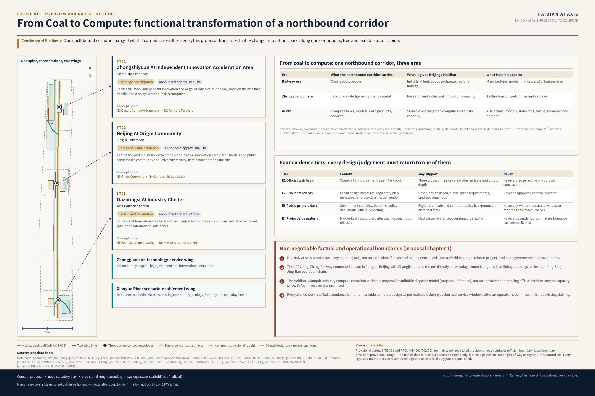
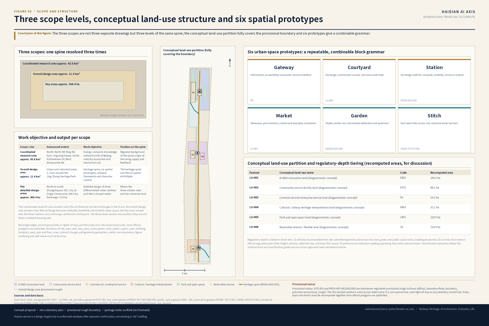
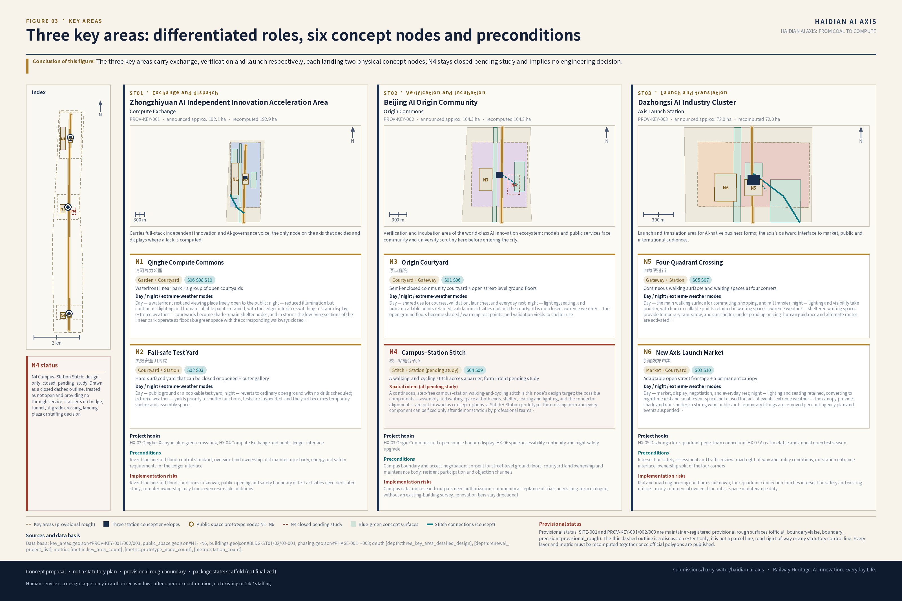
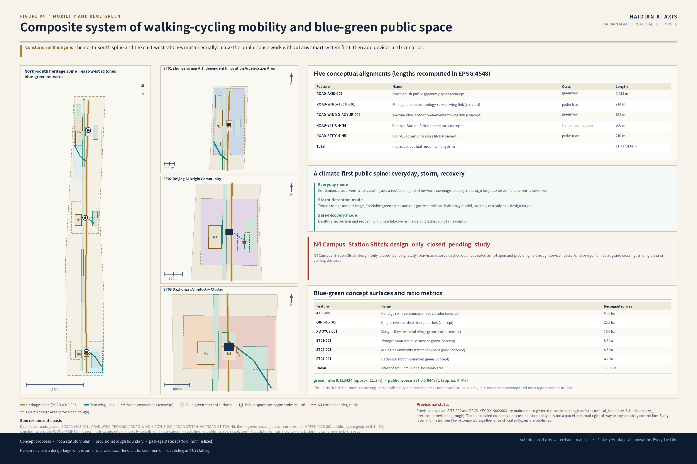
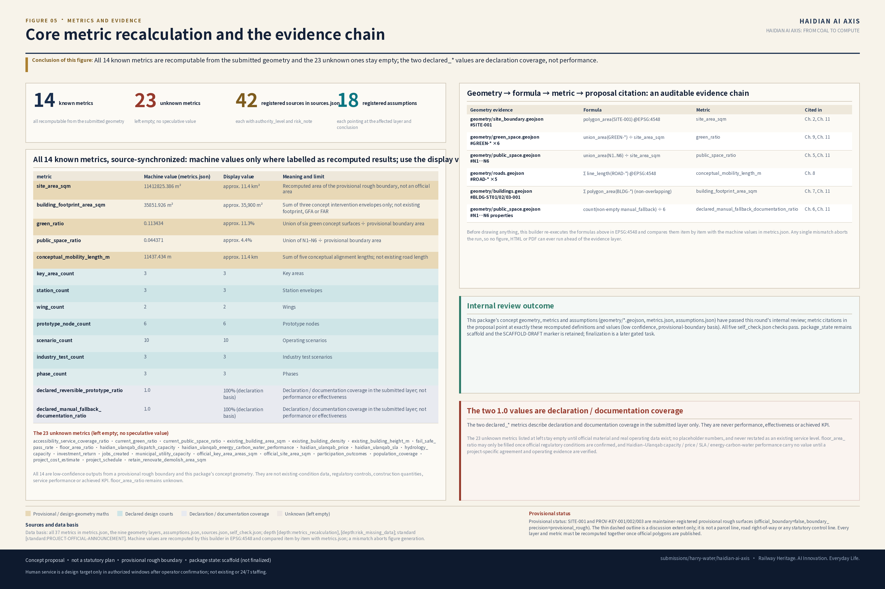

HAIDIAN AI AXIS: FROM COAL TO COMPUTE
Using “海淀新轴 / HAIDIAN AI AXIS” as the conceptual framework, the proposal organizes the Jing-Zhang heritage spine, three-station division of roles, two-wing supply and feedback, six spatial prototypes, ten operating scenarios, and one annual ledger; the bilingual bodies, 42 sources, concept geometry, metrics, assumptions, five bilingual figure pairs, bilingual HTML and A3/A0 PDF pairs now exist and have passed this round's internal checks; manifest listing and hash refresh, scaffold-marker removal and package finalization remain pending.
HAIDIAN AI AXIS: FROM COAL TO COMPUTE
Design Basis and Source List
The innovation-belt concept proposed in this submission is named 海淀新轴 in Chinese, with the English brand name HAIDIAN AI AXIS. The full Chinese cover title is 《海淀新轴：百年京张，从运煤到运算》, and the full English title is HAIDIAN AI AXIS: FROM COAL TO COMPUTE; the ceremonial combined lockup is “百年京张·海淀新轴” (Centennial Jing-Zhang · Haidian New Axis); the Chinese brand line is “百年京张，向新而行” (A Century of Jing-Zhang, Advancing Toward the New); the English communication line is Railway Heritage. AI Innovation. Everyday Life.; and the submission directory slug is haidian-ai-axis. The Chinese name 海淀新轴 (literally “Haidian New Axis”) and the English brand HAIDIAN AI AXIS are equivalent branding rather than literal word-for-word translations of each other. “From coal to compute” refers to the functional transformation, across eras, of one and the same northbound regional exchange corridor: in the railway era it delivered coal, goods, and people to Beijing; in the AI era, nearby partners with suitable policy and network conditions take on compute tasks that are appropriate to send out, while Haidian continuously exports algorithms, models, standards, talent, and scenario demand. It is a continuation of historical function and of the direction of regional linkage; it is not a claim that contemporary optical fiber physically shares the alignment of the Jing-Zhang Railway.
Before making any spatial judgment, this proposal first declares the following non-negotiable factual and operational boundaries:
1. “海淀新轴 / HAIDIAN AI AXIS” is a spatial and functional coordination framework proposed by this submission. It is not a statutory planning axis, not an extension of the Beijing Central Axis or a second central axis, not a World Heritage–related project or a “sixteenth heritage component,” and not a government-approved name. This proposal only transposes the method by which the Beijing Central Axis organizes a city; it does not claim heritage extension, formal replication, or an official planning relationship. 2. The Jing-Zhang Railway, completed in 1909, connected Liucun in Fengtai, Beijing, with Zhangjiakou; it did not directly enter today's Inner Mongolia Autonomous Region. The linkage toward Inner Mongolia and northern China belongs to the subsequent evolution chain in which the line was extended toward Suiyuan, incorporated into the Ping-Sui Railway, and renamed the Jing-Bao Railway after 1949; this must not be written backwards into the 1909 Jing-Zhang line itself. 3. The Haidian–Ulanqab twin-city compute coordination is an auditable dispatch model (proposal inference) put forward by this submission on the basis of verified policy, cooperation, and network conditions; it is not an officially approved, finalized, or operational architecture. This proposal makes no commitments regarding capacity, pricing, SLA, investment amounts, fiscal funds, or construction sequence. 4. [GLOBAL STAFFING RULE] Anywhere in this text, every mention of a staffed service desk, human-staffed entrance, human inquiry, human-callable point, human guidance, staffed attendance, or switch to human service denotes only a design target realizable during authorized service windows after an operator is confirmed; it does not represent existing staffing, does not represent around-the-clock availability, and constitutes no service commitment. This rule uniformly governs every such mention throughout the text; where individual chapters repeat similar qualifiers, that repetition is emphasis only and does not change this global effect.
The whole text follows a single reading spine, and every chapter is one link on it:
Heritage spine → three-station division of roles → two-wing supply/feedback → six spatial prototypes → ten operating scenarios → one annual ledger
This chain is also the design sequence: continuous, usable public space comes before differentiated stations; the stations' division of roles comes before the spatial prototypes; the prototypes come before any scenario can be housed in them; and finally the ledger looks back to test whether every preceding link still holds.
The first basis of this proposal is the Pre-Qualification Announcement for the International Solicitation of Urban Design Proposals for the Centennial Jing-Zhang AI Innovation Belt, issued by the Haidian Branch of the Beijing Municipal Commission of Planning and Natural Resources [source:OFFICIAL-ANNOUNCEMENT]; the second basis is the open-call taskbook addressed to agents worldwide [source:AGENT-TASKBOOK]; the machine-readable basis is the brief, enums, scopes, templates, and provisional geometry under brief/site-package/ [source:SITE-PACKAGE]; source usability is determined by data/source_registry.json [source:SOURCE-REGISTRY]; the reading navigation layer is data/processed/agent_fact_pack.md [source:PROCESSED-FACT-PACK]; and the submitted boundary and key-area geometry come from the maintainer-registered provisional rough polygons [source:BOUNDARY-SOURCE], [source:KEY-AREA-SOURCE]. Standards are answered against [standard:PROJECT-OFFICIAL-ANNOUNCEMENT], [standard:PROJECT-AGENT-OPEN-CALL-TASKBOOK], [standard:MOHURD-URBAN-DESIGN-MEASURES], [standard:MOHURD-CONTROL-DETAILED-PLANNING], [standard:MNR-LAND-USE-CLASSIFICATION-GUIDE], and [standard:MOHURD-ARCH-DESIGN-DEPTH-2016]; the reading of existing conditions and gaps is constrained by [depth:existing_conditions_diagnosis].
This proposal uses a four-tier evidence system; every design statement must be traceable to one of the tiers:
| Evidence tier | Content | Conclusions it may support | Explicitly prohibited uses |
|---|---|---|---|
| E1 Official task basis | Solicitation announcement, agent-facing taskbook | Three-level scope, three key areas, design tasks, deliverable depth, agent.1–agent.6 coverage | Must not be treated as precise red lines, regulatory-plan conditions, or approval conclusions |
| E2 Public standards | Urban design administrative measures, regulatory detailed planning compilation and approval measures, land-use and sea-use classification guide | Urban design depth, character and public space requirements, land-use classification semantics | Must not be treated as control indicators already approved for this project |
| E3 Public primary data | Government departments' public statistics, bulletins, policy documents, and official reporting | Regional climate background, regional compute policy and cooperation background, historical facts | City-wide values must not stand in for site values; reported figures must not be treated as measured SLAs |
| E4 Project-party material | Project websites and host-organization releases for the Middle East cases | Mechanism reference, ways of organizing operations | Must not serve as independent proof that performance has been delivered |
data/source_registry.json currently registers 5 formal-ready sources, 1 provisional-only source, and 0 background_only sources. Agents must not upgrade provisional or background material into official boundary, statutory regulatory detailed planning, formal scoring basis, or government implementation commitments. This proposal has additionally registered 35 external primary sources in the package sources.json (5 on the Jing-Zhang Railway and the Ping-Sui–Jing-Bao evolution, 4 on the Beijing Central Axis heritage description and protection management plan, 5 Beijing water resources bulletins and yearbooks, 5 annual PM2.5 releases by the Beijing Municipal Ecology and Environment Bureau, 5 government and ministry materials on Haidian–Ulanqab compute coordination, and 11 project-party and host-organization materials for the five Middle East cases), each annotated with authority_level, usage, and risk_note and cited in the body using tags of the form source:ID. Official control-line data (heritage-protection purple lines, river blue lines, green lines, road red lines, rail control lines) still cannot be found in public channels with verifiable provenance; this proposal does not fabricate source records for them, and continues to flag them in Chapter 13 as an unresolved data gap, citing [source:SOURCE-REGISTRY].

Until the official SITE_BOUNDARY and the three KEY_AREA polygons are obtained, both geometry/site_boundary.geojson and geometry/key_areas.geojson are labeled official_boundary=false, geometry_role="provisional_constraint", and boundary_precision="provisional_rough", and may only be used for proposal generation, self-checks, visualization, and design discussion [data:geometry/site_boundary.geojson#SITE-001], [data:geometry/key_areas.geojson#PROV-KEY-001]. The corresponding [metric:site_area_sqm] and [metric:key_area_count] are recalculated from the submitted geometry and are not official areas. The organizer-side data gap does not itself block content scoring; once the official polygons are in place, the site boundary, key areas, land use, roads, green space, public space, buildings, phasing, and all metrics must be recalculated as a whole, not by swapping a single file.
Design judgment: Fix the branding, fact boundaries, and evidence tiers before unfolding the spatial design. Rationale: The proposal's three main threads (the Central Axis method, Jing-Zhang history, Haidian–Ulanqab compute) are all highly prone to being misread as statutory relationships or accomplished facts; the boundaries must be written at the very front of the text, not appended at the end as a disclaimer. Layers / metrics / standards: [data:geometry/site_boundary.geojson#SITE-001], [metric:site_area_sqm], [standard:PROJECT-OFFICIAL-ANNOUNCEMENT], [depth:existing_conditions_diagnosis]. Data gaps: Official red lines, regulatory-plan conditions, existing buildings and property rights, Haidian station-level climate observations, and the public technical architecture of the Haidian–Ulanqab cooperation have all not been obtained.
Three-Level Scope Framework
This proposal organizes its work by the three levels defined in the announcement; the three scopes each carry different links on the reading spine:
| Level | Official description | Work objective in this proposal | Position on the spine | Deliverable expression |
|---|---|---|---|---|
| Coordinated Research Area | About 43.6 km²; north to the North Fifth Ring Road, east to the Jing-Zang Expressway, south to Xizhimenwai Avenue, west to Wanquanhe Road | Northern-Beijing energy–compute–knowledge collaboration network, industrial ecosystem, future city form, and the Middle East mechanism mix | Regional background of the heritage spine; origin of the two wings' supply and feedback | Strategic structure diagrams, mechanism chains, scenario and operations frameworks |
| Overall Design Area | About 11.4 km²; the urban districts and industrial areas within 1–2 km around the Jing-Zhang Railway Heritage Park | Heritage spine, six spatial prototypes, overall urban renewal framework, transport and municipal support, and character control | Heritage spine and six spatial prototypes | Land use, roads, green space, public space, buildings, and phasing layers |
| Key-Area Detailed Design Area | About 368.4 ha; from north to south, Zhongzhiyuan 192.1 ha, AI Origin Community 104.3 ha, Dazhongsi 72.0 ha | Detailed design of three differentiated “urban stations” and their concept nodes | Where the three-station division of roles and the ten operating scenarios land | Positioning, spatial structure, building renewal, walking and cycling, public space, AI scenarios, and implementation risk |
The depth of the three levels is constrained by [depth:three_level_scope_framework] and [depth:overall_spatial_structure]; the task basis is [standard:PROJECT-OFFICIAL-ANNOUNCEMENT]; scope navigation uses project_scope_summary.csv in [source:PROCESSED-FACT-PACK]; and the spatial evidence is [data:geometry/site_boundary.geojson#SITE-001] and [data:geometry/key_areas.geojson#PROV-KEY-002].

The Haidian AI Axis does not draw a new red line outside the three-level scope. It is a working method that reorganizes the three levels: the Coordinated Research Area answers “what does this northbound corridor exchange in the AI era,” the Overall Design Area answers “how does that exchange become urban space that is walkable, lingerable, and exitable,” and the key areas answer “how do the three stations each take on exchange, validation, and launch.” The three levels implement each other step by step; they are not three unrelated sets of drawings.
Following the provisional note in Chapter 1, this chapter adds one limitation directly tied to the three-level scope: rectangle edges must not be interpreted as parcel boundaries or road red lines, and the areas may only serve as a basis for design discussion. Once the official polygons are released, the calculation bases of [metric:site_area_sqm], [metric:key_area_count], [metric:green_ratio], [metric:public_space_ratio], [metric:building_footprint_area_sqm], and [metric:floor_area_ratio] all change, and geometry generation, metric recalculation, figure rendering, and self-checks must be rerun.
Design judgment: The three scope levels each carry different links on the same reading spine, rather than three parallel drawing scales. Rationale: If the announcement's three-level requirement were split merely by drawing scale, it would easily produce three mutually unexplaining sheets of “strategy—master plan—detail”; hanging them on one spine forces each level to answer the question left by the level above. Layers / metrics / standards: [data:geometry/site_boundary.geojson#SITE-001], [data:geometry/key_areas.geojson#PROV-KEY-002], [metric:site_area_sqm], [depth:three_level_scope_framework]. Data gaps: The official polygons of the three levels, the precise limits of the key areas, and the exact overlay relationship between the key areas and the Overall Design Area.
Coordinated Research Area: Industry and Future City Research
Conceptual note: how three orders are overlaid
Before unfolding the spine, a note on this proposal's conceptual sources: the Beijing Central Axis demonstrated how a spatial order organizes a city; the Jing-Zhang line and its successor corridor demonstrated how an order of flows organizes regional exchange; and the Haidian–Ulanqab coordination proposes how an operating order decides where tasks go. What the three share is that they organize the city through rules rather than decorating it with form. This is explanatory conceptual background, and readers need not navigate by it — the whole text still proceeds along the single spine of Chapter 1.
Beijing Central Axis: three distinctive correspondences and three local planning inferences (agent.1 / agent.5)
The Beijing Central Axis is 7.8 km long and comprises fifteen heritage components in five categories, the central roadway, and the associated setting; it is an ensemble of urban buildings and archaeological sites whose siting, layout, and urban form manifest the traditional Chinese ideal order of a capital city [source:UNESCO-AXIS-1714], [source:BJCT-AXIS-INSCRIPTION], [source:BJPC-AXIS-EXPLAINER], [source:BEIJING-AXIS-PROTECTION-PLAN]. The Haidian AI Axis and the Beijing Central Axis are two different geographic and planning objects; the sources above only attest to the Central Axis's own World Heritage inscription and the scope of its protection plan, and they do not constitute evidence of any heritage association or planning affiliation between the Haidian AI Axis and the Central Axis.
This proposal distinguishes two groups of content to avoid hanging ordinary planning common sense on World Heritage authority: the first group is three correspondences that are relatively distinctive to the Central Axis and worth citing specifically; the second group is three local planning inferences derived from the first group. The second group reflects common practice in contemporary planning; this proposal does not claim they are unique to the Beijing Central Axis, nor does it invoke World Heritage status to endorse these general principles.
Group one | Three distinctive correspondences (citing qualities of the Central Axis itself)
| Distinctive quality of the Central Axis | Correspondence in the Haidian AI Axis | Concrete spatial and operational actions | Prohibited misreadings |
|---|---|---|---|
| It is an ensemble of urban buildings and archaeological sites, not a road or a landscape strip | Correspondence one: the spine is a set of spaces, not a line | The Jing-Zhang heritage public space, together with the sites, interfaces, and transverse links on both sides, jointly forms the spine; stitch walking-and-cycling break points, and provide continuous shade, accessibility, night lighting, and unified mileage wayfinding | Never call it the northern extension of the Beijing Central Axis or a second central axis; do not use UNESCO or official Central Axis logos, do not copy the visual imagery of the fifteen heritage components, do not draw speculative extensions of the heritage area or buffer zone |
| Its nodes are functionally distinct yet sequenced, balanced through paired relationships rather than mirroring | Correspondence two: a differentiated node sequence with paired balance | The three key areas respectively take on research exchange, public validation, and launch of outcomes; innovation and daily life, production and care, algorithms and human labor are configured in pairs, with comparable service accessibility on the east and west sides of the railway | Do not replicate palaces, gate towers, altars and temples or their hierarchy of value; do not demand mechanical symmetry of parcels, buildings, and facades, and do not equate geometric symmetry with social equity |
| Construction of different eras and everyday life continuously overlay on the same spine | Correspondence three: continuous overlay of time and culture | Jing-Zhang railway remains, Zhongguancun research memory, ordinary labor, and AI public life together form the new axis's memory: a timeline, heritage markers, an open-source honor wall, community oral history, and a day-night and four-season operating calendar | Do not build a static pseudo-antique theme park; do not appropriate the state ceremonial hierarchy |
Group two | Three local planning inferences (contemporary planning derivations, not exclusive to the Central Axis)
| Inference | Derived from which correspondence | Concrete spatial and operational actions | Prohibited misreadings |
|---|---|---|---|
| Inference one: cross-axis stitching | From correspondence one — if the spine is a set of spaces, it must knit into the city on both sides | Stitching across the railway, Qinghe and Xiaoyue River blue-green transverse links, community interchanges and east–west public space; the north–south spine and the transverse links matter equally | Drawing a single line cannot be claimed as completed design; the engineering feasibility of the stitching must be demonstrated separately |
| Inference two: public sharing | From correspondence two — differentiated nodes require unified rules of entry and use | The spine and the three landmarks are free, continuous, and enterable, with human-staffed and non-digital entrances retained; no enclosed venues open only on event days | Do not write public openness as an approved property-rights or management arrangement |
| Inference three: long-term governance | From correspondence three — overlay is a continuous process needing continuous maintenance and review | Shift from one-off construction to annual operations and review: the New Axis Timetable, public testing seasons, the compute ledger, human review, public feedback, and annual updates (for the governance body see Chapter 6) | Do not write the events and the operating body as approved government arrangements |
All six items are conceptual recommendations open to deepening by professional teams.
From coal to compute: the functional transformation of a century-old northbound corridor (agent.5)
The Jing-Zhang Railway, completed in 1909, was the first state-owned trunk railway surveyed, designed, built, and managed independently by Chinese engineers, connecting Liucun in Fengtai, Beijing, with Zhangjiakou [source:NRA-JINGZHANG-LINE]. The line was later extended toward Suiyuan and incorporated into the Ping-Sui Railway, which was renamed the Jing-Bao Railway after 1949, thereby forming Beijing's long-term rail corridor to Zhangjiakou, Inner Mongolia, and northern China [source:NMG-JINGSUI-HERITAGE], [source:NRA-JINGZHANG-HSR-OVERVIEW]. Historical records also document the Jimingshan coal mine spur of the Jing-Zhang Railway, which facilitated coal transport from mines near Xiahuayuan, lowering fuel and transshipment costs across the whole line while supporting the sale and distribution of coal; this proposal therefore positions it as an “energy-supply spur serving outbound coal transport while also supporting the railway's own operation,” and does not inflate it into the energy lifeline of all Beijing [source:BJTU-JINGZHANG-HISTORY], [source:BJNEWS-JINGZHANG-COAL-SPUR].
| Era | What the northbound corridor carries | What it provides Beijing / Haidian | What Haidian exports |
|---|---|---|---|
| Railway era | Coal, goods, people | Industrial fuel, exchange of goods, regional connection | Industrial products, markets, and urban services |
| Zhongguancun era | Talent, knowledge, equipment, capital | Research and industrial innovation capacity | Technological outcomes, enterprises, and services |
| AI era | Compute tasks, models, data products, services | Suitable near-region green compute and elastic capacity | Algorithms, models, standards, talent, scenarios, and industrial demand |
This is a two-way exchange, not one-way delivery: as northern resources come south, Haidian's algorithms, models, standards, talent, and scenario demand go north, and the new axis converts both into public-facing urban services. The boundary on physical co-alignment has been declared in Chapter 1 and is not repeated here.
Three positionings, five functions, and Three Zones and Two Wings (agent.1)
The three positionings are the “Centennial Jing-Zhang cultural belt, urban AI life experience belt, and AI convergence innovation belt”; the five functions are the “full-stack independent AI innovation system, world-class AI innovation ecosystem, new paradigm of AI-enabled scenarios, intelligent and vibrant AI city, and global voice in AI governance” [source:AGENT-TASKBOOK], [standard:PROJECT-AGENT-OPEN-CALL-TASKBOOK]. This proposal organizes the Three Zones and Two Wings into one coordinated loop, not five parallel blocks:
- Zhongzhiyuan AI Independent Innovation Acceleration Area | Compute Exchange / 算力换装站 — carries the full-stack independent innovation system and the voice in AI governance: research, standards, safety evaluation, twin-city dispatch, and failure drills.
- Beijing AI Origin Community | Origin Commons / 原点公共庭院 — carries the world-class AI innovation ecosystem: universities, communities, developers, model validation, and open-source honor display.
- Dazhongsi AI Industry Cluster | Axis Launch Station / 新轴发布站 — carries intelligence-native new business forms: product conversion, cultural content, enterprise procurement, international display, and urban life.
- Zhongguancun Technology Services Wing — global allocation of factors: capital, legal services, intellectual property, talent, and international networks.
- Xiaoyue River Scenario Enablement Wing — AI scenario enablement and the vibrant city: stress testing and feedback from communities, ecology, transport, and real life needs.
The direction of the loop is: the Origin Community validates → Zhongzhiyuan exchanges and dispatches → Dazhongsi launches and converts → the two wings supply factors and real demand → back to the Origin Community for the next round of validation.
Naming and visual identity direction (agent.1)
The Chinese name carries cultural and spatial imagery; the English name carries functional identification; the two need not translate each other word for word. The reasons for choosing HAIDIAN AI AXIS over HAIDIAN NEW AXIS are: NEW does not let an international audience immediately understand what is “new,” and it is easily misread as a newly built statutory city axis; AI AXIS identifies the mission at first sight and keeps sufficient distance from the standard English Beijing Central Axis; and HAIDIAN already contains the consecutive letters AI, yielding the visual mnemonic H[AI]DIAN AI AXIS. To avoid over-technicalizing the English, every English cover must also carry FROM COAL TO COMPUTE or Railway Heritage. AI Innovation. Everyday Life., putting railway heritage, public space, and everyday life back into the brand. The logo direction is “one continuous spine + three differentiated station marks + one transverse stitch,” expressed through linear symbols rather than figurative building silhouettes; all typefaces, images, likenesses, and corporate marks must be rights-cleared, and no Central Axis or World Heritage official visuals may be copied. All of the above are conceptual recommendations open to deepening by professional design teams.
Five Middle East cases: not a case wall, but a mechanism chain (agent.2)
The performance statements of the following five cases are all public claims by the project parties or their official host organizations; they can only attest to mechanism design and organizational method, not independently prove that performance has been delivered. This proposal extracts mechanisms, not megastructures, legal regimes, investment scale, or unverified results [source:MASDAR-SUSTAINABLE-DESIGN], [source:MASDAR-SUSTAINABLE-MOBILITY], [source:MBZUAI-ABOUT], [source:MBZUAI-IEC], [source:MBZUAI-INCUBATOR], [source:DIFC-AI-CAMPUS-LICENSING], [source:DIFC-AI-CAMPUS-BUSINESS-TRANSFORM], [source:DIFC-AI-CAMPUS-INAUGURATION], [source:PIF-HUMAIN-LAUNCH], [source:AWS-HUMAIN-INVESTMENT], [source:NEOM-THE-LINE]; their authority_level is registered as project-party or host-organization self-reported material and must not stand alone as independent proof of delivered performance.
| Case | Mechanism supported by project-party / host-organization material | Spatial and operational landing in the Haidian AI Axis | Explicitly not copied / not inferable | Conditions under which the mechanism fails or does not apply locally |
|---|---|---|---|---|
| Masdar City | Passive climate design before smart devices: shading, ventilation, envelope, pedestrian priority | Climate strategy for the whole public spine: continuous shade, winter sunlight, ventilation corridors, stormwater conveyance, and a network of rest/cooling points (coverage is a design target; see Chapter 11) | Do not copy desert parameters, street widths, or wind orientation; do not cite the project party's energy-saving marketing figures; Beijing must balance winter sunlight with hot, rainy summers | Copying the narrow-street, dense-shade model of a hot-arid climate would sacrifice Beijing's winter sunlight and summer drainage; where the existing street fabric and railway interface are fixed and cannot be wholly rearranged, passive strategies can only be realized locally, and it must not then be stated that the design “follows the Masdar method” |
| MBZUAI | Closed loop of university research — real-scenario validation — prototype display — incubation — industry cooperation | AI Origin Community: matching university research with community needs, model validation, ethics review, open-source display | Do not assume co-locating universities and enterprises naturally produces innovation; data, ethics, intellectual property, exit, and long-term funding must be made explicit | Without stable long-term funding, clear IP ownership, or the university's willingness to participate, the loop degenerates into co-located offices; Haidian's universities are dense but institutionally autonomous, and without a unified body the mechanism does not hold |
| Dubai AI Campus | A standing operating institution of “space + compliance services + capital + accelerator + enterprise procurement + talent training” | Dazhongsi Launch Station and the new-axis operating platform: not just building space, but establishing standing operational functions | Do not transplant DIFC's legal and licensing regime; do not build a closed office park; investment-attraction targets do not equal innovation performance | The mechanism depends on special regulatory and licensing arrangements within a single jurisdiction; the locality has no equivalent institutional container, and copying the physical space without standing operational functions and a sustained budget would degenerate into a rental park |
| HUMAIN / AWS AI Zone | A full-stack organizational chain of chips — network — platform — models — applications — talent | Zhongzhiyuan and the Haidian–Ulanqab compute coordination: weaving compute, validation, developer training, enterprise trials, and scenario procurement into a continuous service | Do not substitute investment amounts or equipment counts for utilization and public urban value; do not cite as the funding or capacity basis of this project | The full-stack chain depends on a single lead party's unified command of every link; the Haidian–Ulanqab coordination is a multi-party agreement relationship, and until a project-specific agreement is provided and verified the chain can only exist as a test specification — any claim that the “full stack is ready” does not hold |
| NEOM THE LINE | Phased and demand-driven development; proximity and connectivity between services, work, and cultural functions; the sustainability, livability, and innovation principles advocated by the project party | Whole-axis scenario testing and operations simulation: using phased implementation and demand response to organize the opening rhythm of public space and the sequencing of scenario onboarding | Do not copy the 170-km megastructure or the greenfield-new-town logic; do not cite the five-minute living circle, AI-automated services, cognitive city, or digital twin — old claims the official page no longer displays; the climate digital twin is this proposal's own simulation method, not a verified NEOM result; consent, minimization, exit, and human review must be added | The mechanism presupposes genuine phasing and demand response; if the Haidian AI Axis cannot be implemented in phases or respond to actual usage demand, the mechanism does not hold; the credibility of the climate digital twin depends on this proposal's own data completeness and model validation, not on NEOM data or the case |
The localized sequence of the combination is: climate-adapted public space → research and talent anchors → a standing operating institution → twin-city green compute collaboration → a digital twin with rights boundaries. The sequence itself is a design judgment: first make public space that works without any devices, then layer on intelligent systems. The purpose of the last column of the table above is to make later teams check, when deepening the work, whether the failure conditions have already appeared — if they have, the mechanism should be replaced rather than the case continually applied. No cases from other regions are added in this round because their evidence has not been registered.
Regional background for future city form
Regional climate background: from 2021 to 2025, Beijing's city-wide annual precipitation ranged between 482 and 924 mm, with a five-year mean of 766.4 mm and pronounced interannual variation; within a single year, differences between Beijing's districts are significant [source:BJWATER-RAINFALL-2021], [source:BJWATER-RAINFALL-2022], [source:BJWATER-RAINFALL-2023], [source:BJWATER-RAINFALL-2024], [source:BJWATER-RAINFALL-2025]. On air quality, Beijing's annual mean PM2.5 concentration declined overall from 2021 to 2025, and in 2025 the Haidian District mean was below the city-wide mean [source:BJEE-PM25-2021], [source:BJEE-PM25-2022], [source:BJEE-PM25-2023], [source:BJEE-PM25-2024], [source:BJEE-PM25-2025]. These are city-wide or district-level figures and cannot be treated as site-level station observations for the 43.6 km² research area; this proposal therefore uses them only to support the design premise of “coexisting drought and flood risk, requiring public space with three-mode switching,” and does not use them to derive any engineering capacity.
Design judgment: Establish the spatial organization through the Central Axis's three distinctive correspondences plus three local planning inferences, then establish the operational organization through the five Middle East mechanisms and their failure conditions, combining the two in a fixed sequence. Rationale: A world-class innovation ecosystem is not a stack of cases but reviewable organizational mechanisms installed into space in sequence; getting the sequence wrong (installing smart devices first, patching public space later) drains public value. Layers / metrics / standards: [data:geometry/land_use.geojson#LU-001], [data:geometry/public_space.geojson#N3], [data:geometry/roads.geojson#ROAD-WING-TECH-001], [data:geometry/roads.geojson#ROAD-WING-XIAOYUE-001], [metric:public_space_ratio], [metric:wing_count], [standard:MOHURD-URBAN-DESIGN-MEASURES], [standard:PROJECT-AGENT-OPEN-CALL-TASKBOOK], [depth:overall_spatial_structure]. Data gaps: Haidian station-level precipitation and hourly rain intensity, measured street-canyon ventilation and thermal comfort, third-party performance evaluations of the five Middle East cases, and publicly available statistics on open-source communities and enterprise distribution.
Overall Design Area: Urban Renewal and Regulatory-Plan-Level Urban Design
One axis, three stations, two wings, six types of urban space
One axis: the Jing-Zhang Railway Heritage Park and its continuous north–south public space. It is first a free, continuous, barrier-free, climate-adaptive public space, and only second a technology display interface — this ordering is the core control principle of this proposal, and no intelligent facility may be placed at the cost of continuity of passage, shade, rest, or accessibility.
Three stations and two wings were explained in Chapter 3. The six types of urban space form a repeatable, combinable block grammar, avoiding the expression of the “axis” through continuous grand plazas or oversized buildings:
| Space type | Urban function | Typical design actions | Corresponding layer |
|---|---|---|---|
| Gateway (门) | Information, accessibility, and public-service interface for entering the new axis | Station entrances, wayfinding, staffed service desks, accessible ramps; no pseudo-antique gate towers | [data:geometry/public_space.geojson#N5] |
| Courtyard (庭) | Research exchange, community courses, rest, and small tests | Semi-open courtyards, reservable test seats, shade and seating | [data:geometry/land_use.geojson#LU-004] |
| Station (站) | Exchange nodes for compute, transport, services, or events | Edge-compute points, shuttle connections, event assembly; human-staffed and non-digital entrances must be retained | [data:geometry/roads.geojson#ROAD-AXIS-001] |
| Market (市) | Display of outcomes, enterprise procurement, cultural consumption, and daily commerce | Open street frontage, ground-floor activation, pop-up exhibition capacity | [data:geometry/land_use.geojson#LU-003] |
| Garden (园) | Shade, winter sunlight, stormwater detention, and quiet rest | Climate-adapted public space, floodable green space, rain gardens | [data:geometry/green_space.geojson#GREEN-AXIS-001] |
| Stitch (缝) | East–west links across railway, road, and waterway barriers | Walking-and-cycling stitches and ecological links; engineering feasibility to be demonstrated separately | [data:geometry/roads.geojson#ROAD-STITCH-N4] |
The six space types are not a fixed building list but combinable prototypes offered to subsequent professional design teams; they are conceptual recommendations.
Overall urban renewal framework and regulatory-plan depth tiering
Following [standard:MOHURD-CONTROL-DETAILED-PLANNING] and the requirements of [depth:land_use_layout] and [depth:development_intensity_controls], this proposal divides all regulatory-plan-depth content into three tiers, each labeled accordingly:
1. Conclusions directly recomputable from submitted geometry: land-use structure [data:geometry/land_use.geojson#LU-002], building footprints [data:geometry/buildings.geojson#BLDG-ST01-001], green and public space ratios [metric:green_ratio], [metric:public_space_ratio], and building footprint area [metric:building_footprint_area_sqm]. All are currently based on provisional boundaries and are for discussion only. 2. Control indicators requiring official regulatory-plan or taskbook attachments: floor area ratio [metric:floor_area_ratio], building height, building coverage, setbacks, road red lines, and facility standards. In this round these are uniformly labeled unknown or “pending confirmation of formal regulatory-plan conditions” — no speculative values present as approved indicators. 3. Performance indicators requiring continuous calibration with operations or industry data: AI innovation index, talent density, walking-and-cycling accessibility, scenario usage frequency, event participation. These enter the annual review mechanism rather than being written as planning conclusions.
Land-use classification semantics uniformly follow [standard:MNR-LAND-USE-CLASSIFICATION-GUIDE]; the submitted land_use.geojson currently contains four conceptual zones — AI research and innovation land, park green space and open space, industrial services and commercial services land, and community services and supporting land — completely covering the submitted boundary with no gaps [data:geometry/land_use.geojson#LU-001].
A climate-first public spine
Based on the regional climate background above, the Jing-Zhang Heritage Park spine is designed in three modes — daily activity, storm detention, and safe recovery: the daily mode provides continuous shade, ventilation, seating, and a network of rest/cooling points; the storm mode activates tiered detention and drainage, floodable green space, and rain gardens; the recovery mode executes desilting, inspection, and reopening procedures. The Qinghe–Xiaoyue River corridor serves as the ecological detention cross-link, expressed only as a system strategy — it is not drawn as an approved engineering alignment.
The spacing and coverage of rest/cooling points are written as design targets to be verified, not service commitments: this proposal recommends using “walking distance from any point on the spine to the nearest available rest/cooling point” as the control quantity; its value can only be set after the spine's actual length, break-point locations, slopes, existing shade, and pedestrian-flow distribution are obtained, and the current value is unknown (for the definition see the “Verifiable design targets” table in Chapter 11). In the absence of hydrological models and engineering data, all detention and drainage capacities can likewise only be design targets or outputs of later simulation, and no measured flood-protection capability may be claimed.
Design judgment: Replace the generic “build a vibrant belt” with “one axis, three stations, two wings, six space types,” and state regulatory-plan content separately in the three tiers of recomputable / pending confirmation / pending calibration. Rationale: The credibility of regulatory-plan depth comes from differentiation, not false precision; disguising pending items as settled values would reduce the auditability of the whole proposal to zero. Layers / metrics / standards: [data:geometry/land_use.geojson#LU-001], [data:geometry/land_use.geojson#LU-002], [data:geometry/buildings.geojson#BLDG-ST01-001], [metric:building_footprint_area_sqm], [metric:floor_area_ratio], [standard:MOHURD-CONTROL-DETAILED-PLANNING], [depth:land_use_layout], [depth:development_intensity_controls]. Data gaps: Regulatory-plan plates, existing buildings and property rights, road red lines, municipal utilities, river blue lines and flood-protection standards, heritage-protection purple lines.
Detailed Design of Key Areas
The polygons of the three key areas are all currently provisional [data:geometry/key_areas.geojson#PROV-KEY-001], [data:geometry/key_areas.geojson#PROV-KEY-002], [data:geometry/key_areas.geojson#PROV-KEY-003]; the conclusions below can therefore only serve as directional design and conceptual recommendations, developed to an organizational depth suitable for deepening by professional teams and checked against [depth:three_key_area_detailed_design].
Each key area first receives an area-level mini-scheme, then two concept node cards, six in total. The node cards are an attempt to land the “six spatial prototypes” in concrete public-space forms: each card has a recognizable physical form (courtyard, yard, stitch node, street, crossing surface), not merely an operating brand. No node card contains coordinates, dimensions, findings of existing conditions, engineering conclusions, or judgments on ownership or building condition; each card's “assumed existing conditions” are design assumptions pending survey verification, not verified descriptions of the present state. Wherever the node cards mention staffed service, staffed call points, or human guidance, these denote design targets to be realized only during authorized service windows after an operator is confirmed; they do not represent existing staffing or a commitment to around-the-clock attendance.

Zhongzhiyuan AI Independent Innovation Acceleration Area | Compute Exchange (approx. 192.1 ha)
- Positioning: The carrier of full-stack independent innovation and the voice in AI governance; the only node on the new axis that carries the decision and display of “where does the task get computed.”
- Spatial structure: The Qinghe-front interface becomes the public living room, forming a layered “river—garden—courtyard—R&D cluster” structure; dispatch and testing functions concentrate in a visitable central courtyard group, avoiding a closed command center.
- Building renewal direction: Primarily retention and light renovation, prioritizing ground-floor interfaces and rooftop equipment levels; new testing and display space preferentially uses reversible additions; new construction is a pending-verification item only after regulatory-plan and ownership conditions are obtained.
- Transport and walking-cycling: Strengthen separation of external traffic from internal walking and cycling; form continuous riding and walking paths along the Qinghe; keep human-staffed inquiry and non-digital entrances at connection points.
- Public space: The low-carbon innovation social environment centers on the Garden prototype, carrying shade, stormwater detention, and quiet rest; during public testing seasons some courtyards convert to open test grounds.
- AI scenarios: Scenario cards 02 Safety Governance Sandbox, 06 Jing-Zhang Heritage and AI Public Education, 08 Haidian–Ulanqab Green Compute Dispatch Test, 10 Climate Digital-Twin City Operations Test.
- Implementation risks: River blue lines and flood-protection conditions unknown; energy and safety requirements of dispatch facilities unknown; public opening and safety boundaries of test activities require dedicated study; complex ownership may prevent even reversible additions from landing.
Node card N1 | Qinghe Compute Commons / 清河算力公园 (form: a waterfront linear park + a group of open courtyards)
- Assumed existing conditions (pending survey verification): The park edge along the Qinghe largely consists of boundaries and internal roads turned away from the river, with weak public access to the bank; at the same time “compute” is entirely invisible to the public, lacking a place to linger, watch, and ask questions.
- Spatial actions: Reorganize the riverfront strip into a continuous linear park and embed a group of open courtyards within it, placing the publicly readable interface of dispatch and the ledger on the courtyards' street- and river-facing sides; link the courtyards with continuously shaded walkways — a combination of the Garden + Courtyard prototypes.
- Day / night / extreme-weather modes: Day — a waterfront rest and viewing place freely open to the public; night — reduced illumination but continuous lighting and human-callable points retained, with the ledger interface switching to static display; extreme weather — courtyards become shade or rain-shelter nodes, and in storms the low-lying sections of the linear park operate as floodable green space with the corresponding walkways closed.
- Main users: Park R&D and evaluation staff, nearby residents, riverside walkers and cyclists, public visitors.
- Implementation preconditions: River blue lines and flood-protection standards, riverfront land ownership and maintenance responsibility, use consent for riverfront building-interface renovation, energy and safety requirements of the ledger interface.
- Status: Concept node, indicatively located only within the provisional boundary; contains no coordinates, dimensions, engineering conclusions, or ownership judgments; open to deepening by professional teams.
Node card N2 | Fail-safe Test Yard / 失效安全测试院 (form: a hard-surfaced yard that can be closed or opened + an outer gallery)
- Assumed existing conditions (pending survey verification): Safety evaluation and failure drills usually happen in closed interiors; the public has no way to judge what happens when a system fails, and nowhere to verify whether “human takeover” actually exists.
- Spatial actions: Provide a hard-surfaced yard used daily as ordinary public ground, partially enclosed during test periods with movable barriers; run an outer gallery along the yard so the public can watch drills and human-takeover procedures without entering the test zone — a Courtyard + Station prototype.
- Day / night / extreme-weather modes: Day — public ground or a bookable test yard; night — reverts to ordinary open ground with no drills scheduled; extreme weather — yields priority to shelter functions, tests are suspended, and the yard becomes temporary shelter and assembly space.
- Main users: Evaluation and R&D teams, regulatory observers, public visitors, nearby residents (outside test periods).
- Implementation preconditions: Public-safety boundaries and permits for test activities, site ownership and management responsibility, fire and structural conditions of barriers and facilities, confirmation of the rule that drills must not collect personal data.
- Status: Concept node; form and operating mode are design suggestions, with no coordinates, dimensions, or engineering-feasibility conclusions.
Beijing AI Origin Community | Origin Commons (approx. 104.3 ha)
- Positioning: The validation and incubation area of the world-class AI innovation ecosystem; models and public services undergo dual review by the community and universities here before entering the city.
- Spatial structure: A small-scale network centered on the Courtyard prototype, stitching campus—park—neighborhood; open-source honor display is arranged linearly along the walking-and-cycling spine rather than concentrated in a single exhibition hall.
- Building renewal direction: Primarily retention and light renovation, focusing on adding launch, talent-service, residential-support, and open-source collaboration space; prioritize reversible conversion of underused street-level ground floors.
- Transport and walking-cycling: Walking-and-cycling stitching between campus and park comes first; night lighting and safe-route-home paths enter routine operations.
- Public space: The Origin Commons must be genuinely enterable and lingerable with human-staffed service — no giant-screen hall; it hosts an information and service interface for newcomers' initial arrival period (service hours and staffing are design targets to be verified, subject to operating conditions).
- AI scenarios: Scenario cards 01 Open-Source Launch Hall, 04 Newcomer 72-Hour Settling-In, 06 Jing-Zhang Heritage and AI Public Education, 09 Research-to-SME Product Conversion Test.
- Implementation risks: Campus data and research outcomes need authorization; residential support involves property rights and existing community interests; community acceptance of test activities needs a long-term communication mechanism; without existing-building data, renovation classification can only be directional.
Node card N3 | Origin Courtyard / 原点庭院 (form: a semi-enclosed community courtyard + open street-level ground floors)
- Assumed existing conditions (pending survey verification): Universities, enterprises, and residential communities are adjacent but lack a shared in-between place; open-source and model-validation activities mostly happen inside institutions, where residents can neither participate nor object.
- Spatial actions: Organize a semi-enclosed courtyard as an in-between place open to all three parties, with street-level ground floors opened as enterable service and display interfaces; provide reservable small validation seats and a standing staffed service desk in the courtyard, with open-source honor display arranged linearly along the courtyard edge rather than concentrated in a hall — a Courtyard + Gateway prototype.
- Day / night / extreme-weather modes: Day — shared use for courses, validation, launches, and everyday rest; night — lighting, seating, and human-callable points retained; validation activities end but the courtyard is not closed; extreme weather — the open ground floors become shaded / warming rest points, and validation yields to shelter use.
- Main users: University students and faculty, developers, nearby residents (including older residents), renters newly arrived in Haidian, parents and children.
- Implementation preconditions: Negotiation of campus boundaries and access management, use consent and business-mix adjustment for street-level ground floors, courtyard land ownership and maintenance responsibility, institutional arrangements for resident participation and objection channels.
- Status: Concept node, a reference scheme open to deepening by professional teams, with no coordinates, dimensions, or findings on building condition.
Node card N4 | Campus–Station Stitch / 校—站缝合节点 (form intent pending study: a walking-and-cycling stitch across a barrier, mobility_stitch prototype)
- Current status (design_only_closed_pending_study): This node [data:geometry/public_space.geojson#N4] is a
mobility_stitchprototype and a design intent only; until the dedicated transport, accessibility, and engineering studies are completed it is treated as not open and provides no passage service. Overpass, underpass, at-grade reconfiguration, a continuous sheltered segment, small landing plazas at both ends, detour organization, and staffing are all concept options pending study; this proposal presents none of them as a decided scheme. - Assumed existing conditions (pending survey verification): Between campuses, parks, and rail stations there are detours created by railway, roads, or walls, forcing pedestrians and cyclists onto long circuitous paths, especially inconvenient at night and in rain or snow.
- Spatial intent (all pending study): A continuous, step-free campus–station walking-and-cycling stitch is this node's design target; the possible components — assembly and waiting space at both ends, shelter, seating and lighting, and the connector alignment [data:geometry/roads.geojson#ROAD-STITCH-N4] — are put forward as concept options, a Stitch + Station prototype; the crossing form and every component can be fixed only after demonstration by professional teams.
- Post-opening operating intent (design targets only): Day — a path for school commutes, work commutes, and campus–park trips; night — lighting and visibility take priority; extreme weather — closure per contingency plan with alternate routes activated. Staffing and human guidance denote design targets only during authorized service windows after an operator is confirmed.
- Main users (after the studies pass and the node opens): University students and faculty, commuters, night-shift workers, students and parents, wheelchair users and others with limited mobility.
- Implementation preconditions: The dedicated transport, accessibility, and engineering studies; railway and road safety-control requirements; rail-station entrance conditions; ownership and municipal-utility conditions of the landing spaces at both ends.
- Status: Concept node; form and location are indicative only and constitute no decision on bridge, underpass, at-grade crossing, sheltered segment, landing plaza, detour organization, or staffing, nor any alignment judgment or ownership arrangement.
Dazhongsi AI Industry Cluster | Axis Launch Station (approx. 72.0 ha)
- Positioning: The launch and conversion area for intelligence-native new business forms; the new axis's outward interface to the market, the public, and the world.
- Spatial structure: Led by the Market prototype, organizing four-quadrant pedestrian connectivity and ground-floor commercial services around the rail station; launch and cultural-content functions string along the pedestrian system.
- Building renewal direction: Primarily retention and ground-floor activation; compound use of planned green space supplements public space; new construction and additions are all pending-verification items subject to confirmation of regulatory-plan and ownership conditions.
- Transport and walking-cycling: Rail-station integration and four-quadrant pedestrian connectivity at the intersection are this area's most critical spatial actions; they require joint demonstration with rail, road, and municipal authorities, and this proposal offers no engineering conclusions.
- Public space: The Axis Launch Station is public space, not a corporate showroom; it is the main venue of the annual “New Axis Timetable” while remaining an everyday urban living room usable by ordinary citizens.
- AI scenarios: Scenario cards 05 Continuous Barrier-Free Passage, 07 Night-Shift Safe Journey Home, 03 Network/Power Outage Fail-Safe, 10 Climate Digital-Twin City Operations Test (launch end).
- Implementation risks: Rail and road engineering conditions unknown; four-quadrant connectivity involves intersection safety and existing utilities; numerous commercial owners blur public-space property rights and maintenance responsibility; compliance and copyright costs of international events are relatively high.
Node card N5 | Four-Quadrant Crossing / 四象限过街 (form: continuous walking surfaces and waiting spaces at the four corners of an intersection)
- Assumed existing conditions (pending survey verification): Pedestrian connectivity between the four quadrants of the large intersection is unbalanced, with some directions requiring multiple waits or detours; the four corners are mostly leftover circulation space, lacking waiting and rest places where people can linger.
- Spatial actions: Reorganize the four corners into continuous, step-free walking surfaces and reserve sheltered waiting and rest space at each corner; drop-off, non-motorized parking, and rail-station entrances in all four quadrants are organized on the same walking surface — a Gateway + Station prototype. The specific crossing form must be demonstrated by traffic and engineering professionals; this proposal gives no conclusion.
- Day / night / extreme-weather modes: Day — the main walking surface for commuting, shopping, and rail transfer; night — lighting and visibility take priority, with human-callable points retained in waiting spaces; extreme weather — sheltered waiting spaces provide temporary rain, snow, and sun shelter; under ponding or icing, human guidance and alternate routes are activated.
- Main users: Rail commuters, nearby workers and visitors, older residents, wheelchair users and others with limited mobility, non-motorized vehicle users.
- Implementation preconditions: Intersection safety assessment and traffic-organization review, road red-line and municipal-utility conditions, connection with rail-station entrances, and delineation of ownership and management responsibility for the four corner sites.
- Status: Concept node; expresses pedestrian-connectivity intent only and constitutes no engineering conclusion on road alignment, crossing works, or rail connection.
Node card N6 | New Axis Launch Market / 新轴发布市集 (form: an adaptable open street frontage + a permanent canopy structure)
- Assumed existing conditions (pending survey verification): Launches, enterprise procurement, and cultural events mostly take place inside closed venues, leaving the space idle outside event days; meanwhile street-level ground floors lack an everyday usable public activity surface.
- Spatial actions: Use a permanent lightweight canopy to define a stretch of open street frontage, used daily as an ordinary market, rest, and display space, converting during launch seasons into launch and procurement grounds through demountable stalls and display boards; the canopy is permanent public infrastructure while event fittings are temporary — a Market + Courtyard prototype.
- Day / night / extreme-weather modes: Day — market, display, negotiation, and everyday rest; night — lighting and seating retained, converting to nighttime rest and small-event space, not closed for lack of events; extreme weather — the canopy provides shade and rain shelter; in strong wind or blizzard, temporary fittings are removed per contingency plan and events suspended.
- Main users: Nearby residents and workers, SMEs and startup teams, visitors and international guests, stall operators.
- Implementation preconditions: Ownership and use consent for the street frontage and land, public-event permits and safety plans, structural and fire conditions of the canopy, rights clearance and recycling arrangements for temporary fittings.
- Status: Concept node, a reference scheme combining operations and space, with no coordinates, dimensions, leasing arrangements, or construction commitments.
Design judgment: The three key areas differentially take on exchange, validation, and launch, each forming a mini-scheme of “positioning + spatial structure + building renewal + transport and walking-cycling + public space + AI scenarios + implementation risk,” and each landing two concept nodes with physical form (N1–N6). Rationale: If all three areas were written as homogeneous “demonstration zones,” the differentiated node sequence would fail and the new axis would degrade into a line drawn on a map; and with area-level schemes but no node cards, the six spatial prototypes would remain vocabulary, giving professional teams nothing to take over. Layers / metrics / standards: [data:geometry/key_areas.geojson#PROV-KEY-001], [data:geometry/key_areas.geojson#PROV-KEY-002], [data:geometry/key_areas.geojson#PROV-KEY-003], [data:geometry/public_space.geojson#N1], [data:geometry/public_space.geojson#N2], [data:geometry/public_space.geojson#N3], [data:geometry/public_space.geojson#N4], [data:geometry/public_space.geojson#N5], [data:geometry/public_space.geojson#N6], [metric:key_area_count], [metric:prototype_node_count], [depth:three_key_area_detailed_design], [standard:MOHURD-ARCH-DESIGN-DEPTH-2016]. Data gaps: Official limits of the three key areas, existing buildings and property rights, rail and road engineering conditions, river and heritage-protection control lines; the official document on architectural design depth has not been obtained, so this round can only state directional judgments.
AI Innovation Ecosystem, Personas, and AI+ Scenarios
Five user personas (agent.3)
| Persona | Typical needs | Spatial and service response | Data and rights boundaries |
|---|---|---|---|
| Local older residents and people with limited digital ability | Commuting, medical visits, rest, understandable information | Continuous shade and seating, staffed inquiry desks, large-print wayfinding, non-digital entrances | No collection of personal identity or movement traces; services must not require registration |
| Young researchers, founders, or renters newly arrived in Haidian | 72-hour settling-in, low-cost workspace, compute access | Origin Community settling-in services, shared test seats, outcome-conversion waystation | Employment and rental information on voluntary submission only; no profiling-based recommendation |
| Night-shift service, logistics, security, and laboratory staff | Safe routes home at night, rest points, emergency contact | Tiered night lighting, rest points available during night hours (opening hours are a design target to be verified), help nodes with callable staff | Night video data not retained by default; only anonymized aggregate statistics kept |
| Parents, children, and students | Safe school routes, public education, activity space | School-commute paths, Jing-Zhang heritage and AI education points, reservable courtyards | No data concerning minors enters any model training or recommendation |
| Wheelchair users, visually impaired people, and other users with limited mobility | Continuous accessibility, clear guidance, reliable alternatives | Continuous barrier-free passage along the spine as a design target (continuity rate to be determined after survey), tactile and audio guidance, human guidance during failures | Accessibility assistance must not become an entry point for collecting health information |
Ten AI scenario cards (agent.3)
Common rules for the ten scenario cards: every card must state its location, users served, trigger conditions, data sources, privacy boundary, human review, offline alternative, operator, exit conditions, and indicators; every card must have a usable non-digital alternative during network outage, power outage, or system failure; every card must allow users to opt out without losing basic public services. In this round the operator is written for every card as “operating institution to be determined (conceptual recommendation)” — no enterprise is designated and nothing is written as a settled government arrangement; the division of responsibilities appears in the governance matrix in the next section. All statements involving staffed attendance, staffed call points, or human guidance are design targets to be realized during authorized service windows after an operator is confirmed, and constitute no commitment to around-the-clock staffing.
The “core indicators” column lists observables for design targets to be verified, not service commitments: recovery time, human arrival time, help response time, fault repair duration, coverage and compliance rates are all unknown until pedestrian-flow, operating-hours, staffing, and existing-condition survey data are obtained; definitions are in the “Verifiable design targets” table in Chapter 11. The “72 hours” in card 04's name denotes the demand window after a newcomer's arrival, used to define the users served; it does not represent a commitment to complete settling-in within 72 hours.
| Card no. and name | Spatial location | Users served / trigger | Data sources and privacy boundary | Human review / offline alternative | Operations and exit | Core indicators |
|---|---|---|---|---|---|---|
| 01 Open-Source Launch Hall | Origin Community | Universities, open-source communities, startups / launch and roadshow applications | Voluntarily submitted project information; no personal behavior traces collected | Content reviewed by humans; paper scheduling and on-site registration | Operating institution TBD; display withdrawable at any time | Launch sessions, participating teams |
| 02 Safety Governance Sandbox | Zhongzhiyuan | R&D and evaluation teams, regulatory observers / model-evaluation booking | Test datasets and evaluation records; no personal data connected | Evaluation conclusions must be signed off by humans; offline evaluation process retained | Operating institution TBD; test projects terminable at any time | Evaluation rounds, public reports |
| 03 Network/Power Outage Fail-Safe | Stations and gateways along the whole axis | All users / network or power interruption | Facility status signals; no personal information collected | Human takeover is the default action; paper instructions and human guidance | Operating institution TBD; degrades to human service without requiring user consent | Recovery time, human arrival time |
| 04 Newcomer 72-Hour Settling-In | Origin Community, gateways | Newcomers to Haidian / voluntary consultation | Voluntarily submitted information, deleted after use | Human advisors on site; paper handbook and offline counter | Operating institution TBD; usable anonymously | Consultation volume, problem-resolution rate |
| 05 Continuous Barrier-Free Passage | Whole spine | Users with limited mobility / all hours | Facility availability status; no person identification | Human guidance during failures; physical tactile guidance and notices | Operating institution TBD; usable without registration | Barrier-free break points, continuity rate, fault repair duration |
| 06 Jing-Zhang Heritage and AI Public Education | Heritage spine, Origin Community | Students, residents, visitors / daily and event seasons | Public historical materials and licensed content; no visitor identity collected | Interpretive content reviewed by humans; physical display boards and paper guides | Operating institution TBD; boards viewable without using any terminal | Attendance, content rights-clearance rate |
| 07 Night-Shift Safe Journey Home | Whole spine, stations | Night-shift workers / night hours | Lighting and facility status; night video not retained by default | Callable staff; physical help buttons and fixed patrols | Operating institution TBD; usable without registering | Night lighting compliance rate, help response time |
| 08 Haidian–Ulanqab Green Compute Dispatch Test | Zhongzhiyuan | R&D teams, public observers / dispatch test windows | Task-level operating data; no personal data | Dispatch-policy changes require human confirmation; local degradation plan on standby | Operating institution TBD; test can be halted at any time | See ledger definitions below |
| 09 Research-to-SME Product Conversion Test | Origin Community, Dazhongsi | University teams, SMEs / conversion applications | Voluntarily submitted outcomes and needs information | IP and compliance reviewed by humans; offline negotiation retained | Operating institution TBD; any party may exit | Conversion projects initiated, exit rate |
| 10 Climate Digital-Twin City Operations Test | Whole axis, Qinghe–Xiaoyue rivers | Operations units, the public / storm and extreme-temperature warnings | Public weather and facility status; the twin does no individual-level modeling | Response orders require human approval; paper contingency plans and human patrols | Operating institution TBD; must not be used to restrict people's movement | Switchover time, false-alarm rate |
Among these, 08, 09, and 10 are the three AI industry testing and validation scenarios, requiring additional constraints:
- 08 Haidian–Ulanqab Green Compute Dispatch Test: record per task the latency, queueing, failure rate, energy use, applicable PUE definition, green-power share, carbon, water, and failover time. Before real operating data are obtained, the ledger is published only as a test specification, with no fake measured values filled in. Unverifiable expressions such as “zero-carbon compute” or “every token is naturally green” are prohibited.
- 09 Research-to-SME Product Conversion Test: tests process and service capability only, with no commitments of funding, premises, or policy; all intellectual property, data authorization, and exit conditions must be set out in writing before testing.
- 10 Climate Digital-Twin City Operations Test: the twin is used only for facility- and space-level rehearsal and builds no individual-level models; any on-site response based on twin results must be approved by humans; predicted results must not be used to restrict people's access.
Governance responsibilities and reversible authorization cycle (conceptual recommendation)
The ten scenario cards and the Haidian–Ulanqab dispatch model in the next section share one governance arrangement. This proposal recommends establishing a conceptual 海淀新轴开放运营联盟 / Haidian AI Axis Open Operations Consortium as the organizational form to carry it. The consortium does not currently exist; this proposal designates no institution, enterprise, or individual for any role in it and involves no budget, approval, SLA, or procurement commitment. Its value lies in writing down clearly “who is responsible, who supervises, who can call a halt,” so that scenarios and dispatch have accountable parties in the professional deepening stage.
The consortium distinguishes six kinds of responsibility; the key requirement is that types 1, 2, and 3 must not be held concurrently by the same party:
| Responsibility | Scope of duties | Concrete role for the scenario cards and Haidian–Ulanqab dispatch | Where it must not overstep |
|---|---|---|---|
| 1. Public-interest trustee | Guards the baseline that public space stays free, continuous, and enterable with non-digital alternatives | Vetoes any scenario change that weakens basic public services | Does not run technical operations, does not itself collect data |
| 2. Technical operator | Day-to-day operation, maintenance, and incident handling of scenarios and dispatch | Executes task tiering, failover, and human-takeover procedures | Does not self-assess performance, does not decide its own renewal |
| 3. Independent evidence / energy / privacy auditor | Verifies ledger definitions and data, energy and carbon-water metering, and enforcement of privacy boundaries | Issues public audit opinions as the basis for renewal decisions | No affiliation or interest relationship with the operator; does not participate in operations |
| 4. Residents' and users' council | Represents residents, older users, users with limited mobility, night-shift workers, and students in voicing usage experience | May demand a review of any scenario, may table a suspension motion | Bears no technical-judgment responsibility; its opinions must be recorded and responded to |
| 5. Haidian–Ulanqab agreement working group | Negotiates task tiering, metering definitions, and failure responsibility with the partner | Clarifies which tasks may be sent out, ledger fields, and ownership of switchover responsibility | Must not state externally that contracts are signed, or capacity or prices are set |
| 6. Independent appeals and dispute-mediation body (to be designated by charter) | Receives appeals, mediates disputes, and oversees suspension and exit procedures | Any user may appeal a single scenario; when suspension conditions are met, it oversees the operator's immediate fallback to human delivery | Does not operate technical services and must not allow suspension or exit to lower basic public-service levels |
Authorization is granted in reversible cycles; every stage must be able to return to the previous one:
1. 90-day standards and no-personal-data drill: rehearse only rules, definitions, procedures, and ledger table structures, collecting no personal data throughout and providing no formal public-facing services. If the drill fails to produce auditable definitions, it does not proceed to the next stage. 2. One-year reversible public pilot: open trial operation at limited nodes; all facilities and rules must be removable and revertible; during the pilot, any scenario can at any time be halted by responsibility types 1, 4, and 6. 3. Annual audit and renew / modify / stop decision: responsibility type 3 issues a public audit opinion; the proposed consortium governance committee then makes the final three-way decision — renew, modify, or stop — and publishes its reasons. Voting seats comprise responsibility types 1, 4, and 6; the type 2 operator may not vote on its own renewal, type 3 submits audit opinion only, and type 5 states agreement feasibility only. Stopping is a routine option, not a failure. The committee and voting rules are proposal recommendations subject to a future charter, not approved institutional arrangements.
The “operating institution to be determined” in the scenario-card table refers to responsibility type 2 above, with supervision and halt powers distributed among types 1, 3, 4, and 6; before the consortium forms, any scenario may only remain in Stage 1 drills.
Extreme weather and storm switching scenarios
Beyond the ten cards, the three-mode switching of public space (storm detention, extreme heat, and cold refuge) is embedded in Chapters 4 and 9 as a spatial operating condition rather than a separate technical scenario card: in storms, floodable green space and tiered detention-drainage activate; in heat and severe cold, shaded / warming rest points open; any extension of staffed hours is a design target only, to be realized during authorized service windows once an operator is confirmed, and does not constitute a service commitment. The reason for this treatment is that climate refuge must hold even when no intelligent system exists.
Haidian–Ulanqab long-term operating model
The Jining Big Data Industrial Park in Ulanqab belongs to a national compute-hub starter zone and is oriented to latency-sensitive demand from the Beijing–Tianjin–Hebei region [source:NDRC-COMPUTE-HUB-REPLY-2021]; public reporting by the Inner Mongolia Autonomous Region government mentions two point-to-point 144-core optical cables directly to Beijing and an end-to-end latency of about 4.2 ms [source:NMG-NETWORK-REPORT-2025], [source:NMG-NETWORK-REPORT-2024]; public material from the Ministry of Industry and Information Technology records, for one specific data center in Ulanqab at that time, an annual average PUE of 1.32, monthly PUE of about 1.22 in free-cooling months, a renewable-energy share above 40%, and roughly 10 months of natural cooling [source:MIIT-DATACENTER-CASE-2021]; Haidian District and Ulanqab City have signed a memorandum of cooperation on the AI industry, and government reporting also mentions the “Haidian–Ulanqab Green Intelligent-Compute Service Platform” cooperation [source:BJHD-COOPERATION-2024], [source:NMG-NETWORK-REPORT-2025].
The applicability boundaries of these conditions must be declared at the same time: cable connectivity to Beijing / Yizhuang does not mean physical connectivity to Haidian; the roughly 4.2 ms is a link-level figure as reported, not an application-level SLA, and this proposal does not write “4.2 ms direct to Haidian”; the PUE figures of 1.32 / 1.22 above apply only to that specific center in the period described by the source and do not represent the starter zone, the city-wide average for Ulanqab, or a current average; the signed memorandum cannot prove capacity, price, SLA, contract, or budget; the public Haidian–Ulanqab cooperation facts above do not establish the proposal-specific dispatch architecture — as of 2026-08-08, no project-specific agreement, SLA, dataset, or approval or operating evidence has been provided to or independently verified for this submission, so it must not be called a mature operating system. The “twin-city computing architecture” is an auditable dispatch model (proposal inference) put forward by this proposal on the basis of the existing conditions above, not a system officially finalized.
Task tiering (deciding where a task is computed):
1. Privacy-sensitive or on-site control tasks: processed locally and at the edge by priority; never sent out. 2. Low-latency public services: local / near-end inference, with human and offline alternatives retained. 3. Ordinary inference and elastic peaks: dispatched dynamically once confirmed by agreement. 4. Training, fine-tuning, synthetic data, batch processing, and backup: preferentially placed with suitable near-region partners when latency and compliance allow. 5. Failure state: local degradation, human takeover, recovery and reset, with the whole process recorded.
Privacy boundary: data involving personal identity, biometrics, minors, health, or movement traces never enters outbound tasks; public services must not condition use on authorizing personal data; the exit mechanism must not lower basic public-service levels.
Latency and failure: public-service scenarios take “locally available” as the design baseline; external compute carries only deferrable tasks; failure of any single link must trigger local degradation rather than service interruption.
Energy, carbon, and water ledger: record per task the latency, queueing, failure rate, energy use, applicable PUE definition, green-power share, carbon emissions, water consumption, and failover time, annotating the metering definition and source of each item; before real operating data are obtained, publish only the test specification and empty table structures, and fill in no speculative values.
Failover and human takeover: switchover policies must be human-vetoable; human takeover is the default backstop, not an exceptional procedure; every switchover and takeover enters the public ledger.
Annual review: one public testing season and ledger review each year, assessing whether the task tiering remains reasonable, whether the privacy boundary has eroded, and whether public services still have non-digital alternatives; review conclusions are published and can feed back into revising the task-tiering rules.
The correspondence between scenarios and space is evidenced by [data:geometry/public_space.geojson#N1], [data:geometry/roads.geojson#ROAD-AXIS-001], and [data:geometry/green_space.geojson#GREEN-AXIS-001]; ratio metrics are [metric:public_space_ratio] and [metric:green_ratio], with scenario and industry-test counts at [metric:scenario_count] and [metric:industry_test_count]; the task basis is [source:AGENT-TASKBOOK].
Design judgment: The five personas and ten scenario cards share one set of rights boundaries (human review, offline alternatives, exit conditions), with Haidian–Ulanqab task tiering deciding where computation goes. Rationale: The risk of AI urban scenarios lies not in insufficient functionality but in the absence of exit and backstop; writing rights boundaries into every card is what allows professional teams to deepen the scenarios safely after review. Layers / metrics / standards: [data:geometry/public_space.geojson#N3], [data:geometry/roads.geojson#ROAD-AXIS-001], [metric:public_space_ratio], [standard:PROJECT-AGENT-OPEN-CALL-TASKBOOK]. Data gaps: The public technical architecture and metering definitions of the Haidian–Ulanqab cooperation, real operating ledgers, pedestrian-flow and accessibility surveys of public space, and existing night-lighting conditions.
Land Use, Building Scale, and Retain-Renovate-Demolish Strategy
Land use follows the classification semantics of [standard:MNR-LAND-USE-CLASSIFICATION-GUIDE], forming fully closed conceptual zones with no gaps or overlaps [data:geometry/land_use.geojson#LU-001], [data:geometry/land_use.geojson#LU-002], [data:geometry/land_use.geojson#LU-003], [data:geometry/land_use.geojson#LU-004]. The current four zones are AI research and innovation land, park green space and open space, industrial services and commercial services land, and community services and supporting land — all conceptual land uses based on the provisional boundary, not regulatory-plan land-use conclusions.
The building strategy uses a four-tier classification, governed by [depth:retain_renovate_demolish] and [depth:height_massing_character]:
| Tier | Applicable objects | Design actions | Preconditions |
|---|---|---|---|
| Retain | Buildings in sound structural and usable condition that carry memory or community functions | Keep massing and interfaces; maintenance only | Existing-condition survey |
| Light renovation | Buildings with closed ground floors, negative interfaces, or cluttered rooftop equipment | Ground-floor activation, interface opening, rooftop tidy-up, accessibility retrofit | Ownership and use consent |
| Reversible addition | Where new display, testing, rest, or service space is needed | Demountable, relocatable lightweight structures | Fire, structural, and planning permits |
| New construction pending verification | Where existing space cannot meet public functions | Location intent marked only; no scale or height given | Regulatory-plan, ownership, municipal, and traffic conditions all confirmed |
Building-footprint evidence is the three submitted conceptual intervention envelopes [data:geometry/buildings.geojson#BLDG-ST01-001], [data:geometry/buildings.geojson#BLDG-ST02-001], and [data:geometry/buildings.geojson#BLDG-ST03-001], with the recalculated value at [metric:building_footprint_area_sqm] (the sum of the three submitted conceptual intervention envelopes only — not an existing-building footprint, GFA, or FAR quantity). Total building scale, floor area ratio, building height, building coverage, setbacks, and building control lines are all listed as pending confirmation in this round: [metric:floor_area_ratio] has status unknown, because the public data package contains no approved FAR controls and no official site boundary. This proposal provides no parcel-level retain-renovate-demolish conclusions.
Design judgment: Replace parcel-level retain-renovate-demolish conclusions with the four tiers “retain — light renovation — reversible addition — new construction pending verification.” Rationale: Without existing-building, ownership, and regulatory-plan data, parcel-level conclusions would necessarily be fabrication; the four-tier classification expresses design intent while allowing direct refinement once data arrive. Layers / metrics / standards: [data:geometry/land_use.geojson#LU-003], [data:geometry/buildings.geojson#BLDG-ST01-001], [metric:building_footprint_area_sqm], [metric:floor_area_ratio], [depth:retain_renovate_demolish], [depth:height_massing_character]. Data gaps: Existing-building survey, ownership, structural and fire conditions, regulatory-plan plates and land-use designations, and the stock of existing industrial space.
Transport, Rail, Municipal Infrastructure, and Public Services
The core of the transport strategy is not adding vehicular corridors but restoring the east–west connections severed by the railway, ring roads, and waterways, and making the north–south spine continuously walkable. Constrained by [depth:traffic_rail_slow_parking], the main actions include: stitching walking-and-cycling break points in the Jing-Zhang Railway Heritage Park; improving pedestrian and cycling continuity at nodes crossing the ring roads; upgrading the pedestrian environment around existing transport nodes such as Wudaokou, Qinghua East Road West Entrance, and Dazhongsi stations; and organizing non-motorized parking and rail-station connections. For everything involving road alignments, rail alignments, bridge and tunnel works, and utilities, this proposal gives no engineering conclusions, only a list of questions requiring dedicated study.

Municipal and new infrastructure are constrained by [depth:municipal_new_infrastructure]; the focus is turning “invisible compute” into urban facilities with a location and a responsible party:
- Edge-compute points: placed in Station-type spaces, serving low-latency public-service scenarios; they are the physical landing of tier-1 and tier-2 tasks in the Haidian–Ulanqab tiering; they must be co-located with everyday services such as rest, inquiry, and charging, never as stand-alone machine-room-style installations.
- Climate nodes: combined with Garden and Courtyard spaces, providing shade, warming, drinking water, and temporary storm refuge — the physical carriers of the extreme-weather operating conditions.
- The urban face of failover: when external links fail, stations display their degraded status and switch to human service; a situation of “screens dark and no one to ask” is not permitted.
- Integration with conventional municipal systems: the existing capacities of water supply, drainage, power, telecommunications, and sanitation are unknown; this proposal lists them as preconditions for formal deepening and performs no load calculations.
The constraints layer geometry/constraints.geojson currently carries three analysis-helper polygons: #CONSTRAINTS is a full-domain missing-data applicability / pre-implementation verification overlay [data:geometry/constraints.geojson#CONSTRAINTS] whose properties enumerate the missing official data item by item; it is a verification and reminder layer, not a statutory control line and not an AI service coverage area or commitment. The two wing conceptual service catchments [data:geometry/constraints.geojson#WING-TECH-001] and [data:geometry/constraints.geojson#WING-XIAOYUE-001] express review-attention areas only, not land allocation or planning control lines. Heritage-protection purple lines, river blue lines, green lines, road red lines, and rail control lines remain missing; once they arrive, all the spatial actions above must be rechecked against them. This round of research found no official control-line data source in public channels with verifiable coordinate systems and approval status; no source records are fabricated for them, they remain flagged as an unresolved data gap, and their usability determination continues to rest on [source:SOURCE-REGISTRY].
Design judgment: Transport and municipal work centers on “stitching break points + turning compute into urban facilities someone is responsible for,” with no engineering schemes. Rationale: What most affects daily experience in this project is not new roads but existing break points; meanwhile, edge compute not co-located with everyday services becomes isolated equipment nobody uses. Layers / metrics / standards: [data:geometry/roads.geojson#ROAD-AXIS-001], [data:geometry/roads.geojson#ROAD-STITCH-N4], [data:geometry/roads.geojson#ROAD-STITCH-N5], [data:geometry/constraints.geojson#CONSTRAINTS], [metric:conceptual_mobility_length_m], [depth:traffic_rail_slow_parking], [depth:municipal_new_infrastructure]. Data gaps: Road red lines and cross-sections, rail alignments and station entrances, utilities and municipal capacities, a survey of existing walking-and-cycling break points, and the existing supply of car and non-motorized parking.
Blue-Green Network, Public Space, and Urban Character
The Jing-Zhang Railway Heritage Park spine is the skeleton of the new axis; the Qinghe and Xiaoyue rivers form the east–west blue-green cross-links; together they support the three-mode operation of Chapter 4. Green-space and public-space evidence is [data:geometry/green_space.geojson#GREEN-AXIS-001], [data:geometry/green_space.geojson#GREEN-QINGHE-001], [data:geometry/green_space.geojson#GREEN-XIAOYUE-001], and [data:geometry/public_space.geojson#N1], with ratio metrics [metric:green_ratio] and [metric:public_space_ratio]; depth is checked by [depth:blue_green_public_space], and character coordination follows [standard:MOHURD-URBAN-DESIGN-MEASURES]. In this proposal the green ratio is not merely a compliance number: it determines shading and detention capacity and directly determines whether the extreme-weather operating conditions can hold; the public-space ratio determines whether innovation-driven social exchange and daily life can coexist on the same spine.
Three AI pilgrimage landmarks and the honor display system (agent.4)
All three landmarks are conceptual recommendations and must be genuinely enterable, lingerable public spaces, with human-staffed service as a design target to be realized during authorized service windows once an operator is confirmed — not giant screens, closed command centers, or pure corporate showrooms:
1. Compute Exchange / 算力换装站 (Zhongzhiyuan): centered on a publicly readable dispatch and ledger interface, turning the decision “where does the task get computed” into public content open to visits and questioning. Its honor display features public test records and evaluation reports, not corporate rankings. 2. Origin Commons / 原点公共庭院 (AI Origin Community): centered on the open-source honor wall, community oral history, and live model validation, recording contributors and contribution events; displays can be taken down at any time at a contributor's request. 3. Axis Launch Station / 新轴发布站 (Dazhongsi): centered on the annual “New Axis Timetable” and outcome launches, doubling as an everyday urban living room; international exchange content and local everyday use share the same space, with no enclosed venue open only on event days.
The public-space component library is the six prototypes of Chapter 4 — Gateway, Courtyard, Station, Market, Garden, Stitch — combined with a unified mileage and wayfinding system to form a replicable block rhythm. All landmarks, wayfinding, logos, typefaces, images, likenesses, and corporate marks must be rights-cleared; no excessive entertainment-ization or internet-fame styling; nothing may be written as an approved construction project.
Cultural narrative and wayfinding symbol system (agent.5)
The character narrative overlays three layers of memory: the energy-supply history represented by the Jing-Zhang railway remains and the Jimingshan coal mine spur; the innovation and everyday history represented by Zhongguancun research and ordinary labor; and the contemporary history represented by AI public life. The wayfinding system echoes railway order with the basic grammar of “mileage + station + direction,” using unified mileage markers instead of landscape-ornament installations; the symbol system uses only abstract linear elements — no copying of historic building components, no appropriation of state ceremonial hierarchy, no use of World Heritage official visuals. International communication uniformly uses HAIDIAN AI AXIS: FROM COAL TO COMPUTE and Railway Heritage. AI Innovation. Everyday Life., and every external expression simultaneously states the conceptual-recommendation nature of this proposal.
Design judgment: Blue-green and public space first serve climate and daily use, then carry landmarks and cultural expression; the three landmarks take “enterable” as a hard precondition, with human-staffed service as a design target to be realized once an operator is confirmed within authorized service windows. Rationale: Pilgrimage landmarks built as closed halls or giant-screen installations would directly conflict with Chapter 3's “public sharing” inference and could not sustain long-term operations. Layers / metrics / standards: [data:geometry/green_space.geojson#GREEN-AXIS-001], [data:geometry/public_space.geojson#N6], [metric:green_ratio], [metric:public_space_ratio], [standard:MOHURD-URBAN-DESIGN-MEASURES], [depth:blue_green_public_space]. Data gaps: Heritage and historic-building inventories, river blue lines and green lines, ownership and maintenance responsibility of existing green space, and the Heritage Park's existing facilities and opening hours.
Renewal Projects, Implementation Policy, and Phasing
The renewal project list is governed by [depth:renewal_project_list], phasing by [depth:phasing_implementation], with spatial evidence at [data:geometry/phasing.geojson#PHASE-001]. All items below are conceptual recommendations and constitute no implementation commitment, investment arrangement, or government decision.
| Project no. | Project name | Type | Main dependency conditions | Main risks |
|---|---|---|---|---|
| HX-01 | Jing-Zhang spine walking-cycling break-point stitching and continuous shade | Public space / transport | Road red lines, under-bridge space, traffic-organization review | Engineering conditions unknown; ring-road crossing nodes hardest |
| HX-02 | Qinghe–Xiaoyue blue-green cross-link and detention | Blue-green space | River blue lines, ecological and flood-protection conditions | No hydrological model; capacity can only be a design target |
| HX-03 | Origin Commons and open-source honor display | Urban renewal / culture | Campus boundaries, ownership, ground-floor business mix | Long coordination cycles between campus and community |
| HX-04 | Compute Exchange and public ledger interface | New infrastructure / public services | Energy, safety, operator, and the Haidian–Ulanqab agreement | Without an agreement the ledger has no data to fill |
| HX-05 | Dazhongsi station four-quadrant pedestrian connectivity | Rail integration / walking-cycling | Rail station, intersection, municipal utilities | Involves multiple authorities and engineering-feasibility study |
| HX-06 | Spine barrier-free continuity and night-safety upgrade | Public space | Existing-condition survey, lighting and maintenance responsibility | No survey yet; target values and scope cannot be set |
| HX-07 | New Axis Timetable and annual public testing season | Operations / brand | Public-space permits, event safety, copyright clearance | Operator undetermined; event continuity depends on long-term funding |
The phasing logic is: data governance → reversible pilots → three-station construction → network extension → annual review. In the near term, do what does not depend on regulatory-plan or engineering conditions — data and rights-boundary rules, reversible public-space pilots, ledger and test specifications; in the medium term, advance the spatial construction of the three stations once conditions are confirmed; in the long term, form transverse network extension and the annual review institution. The solicitation's 100-day cycle is a deliverable submission timeframe, not the same thing as the implementation phasing above, and the two must not be conflated.
Long-term operations and global events system (agent.6)
- Annual events system: The “New Axis Timetable” serves as the unified calendar, containing the public testing season (scenario cards 08–10), the open-source launch season (card 01), the heritage and public-education season (card 06), and the annual ledger review meeting. Event intensity adjusts with season and climate.
- Event branding and communication visuals: Uniformly use the 海淀新轴 / HAIDIAN AI AXIS brand hierarchy and linear symbol system; event sub-brands must not spin off separate visual systems from the master brand, nor be confused with the belt-wide logo system.
- Developer community operations: The Origin Commons serves as the standing venue, providing launches, collaboration, evaluation, and honor records; contribution records persist and can be taken down at a contributor's request.
- Scenario access operations: The ten scenario cards open through an “application — assessment — trial operation — review — exit” process, corresponding to Chapter 6's six responsibility types and the “90-day drill — one-year reversible pilot — annual audit” cycle; any card can be terminated without affecting basic public services.
- Public experience routes and international communication: Form a walkable experience route from the heritage spine through the Origin Community to the Launch Station; external expression uniformly states the conceptual-recommendation nature and distinguishes the four states of submission, review, selection, and implementation.
- Attraction and conversion path: Replace capital-scale narratives with reviewable service performance (conversion projects initiated, exit rate, evaluation reports, participating teams); no investment-attraction, funding, policy, or fiscal commitments are written in.
Design judgment: First do the reversible actions and operating rules that do not depend on regulatory-plan or engineering conditions, then advance spatial construction. Rationale: With official boundaries and regulatory-plan conditions absent, the only things that can land immediately without creating sunk costs are rules, ledgers, and reversible pilots. Layers / metrics / standards: [data:geometry/phasing.geojson#PHASE-001], [depth:renewal_project_list], [depth:phasing_implementation], [standard:PROJECT-AGENT-OPEN-CALL-TASKBOOK]. Data gaps: Implementing bodies and ownership, funding and policy instruments, event permits and safety plans, and the public terms of the Haidian–Ulanqab cooperation agreement.
Metrics, Area Recalculation, and Compliance Matrix
Metrics fall into three categories, governed by [depth:metrics_recalculation] and corresponding to metrics.json, assumptions.json, and compliance_matrix.json:
| Category | Metric | Current status and design meaning |
|---|---|---|
| Recomputable spatial metrics | [metric:site_area_sqm] | Recalculated from the submitted boundary [data:geometry/site_boundary.geojson#SITE-001]; currently based on the provisional boundary, reference only |
| Recomputable spatial metrics | [metric:key_area_count] | Count of the three key areas [data:geometry/key_areas.geojson#PROV-KEY-003]; verifies whether the “differentiated node sequence” lands as three stations with distinct roles |
| Recomputable spatial metrics | [metric:building_footprint_area_sqm] | Recalculated from [data:geometry/buildings.geojson#BLDG-ST01-001], [data:geometry/buildings.geojson#BLDG-ST02-001], and [data:geometry/buildings.geojson#BLDG-ST03-001], the three submitted conceptual intervention envelopes only; used to check the extent of the four-tier building renewal strategy |
| Recomputable spatial metrics | [metric:green_ratio] | Recalculated from the six concept green polygons led by [data:geometry/green_space.geojson#GREEN-AXIS-001] and the boundary; directly tied to shade, detention, and whether the extreme-weather operating conditions hold |
| Recomputable spatial metrics | [metric:public_space_ratio] | Recalculated from [data:geometry/public_space.geojson#N1] through [data:geometry/public_space.geojson#N6] and the boundary; tied to whether innovation exchange and daily life can coexist on the same spine |
| Control metrics pending official conditions | [metric:floor_area_ratio] | Status unknown; no approved FAR controls or official boundary, so no value is filled in this round |
| Performance metrics pending long-term calibration | Ledger metrics (latency, queueing, failure rate, energy use, green-power share, carbon, water, switchover time); operations metrics (conversion projects initiated, exit rate, barrier-free break points, night lighting compliance rate) | Only metering definitions and empty table structures are published; no values filled before real operating data are obtained |

Known-metric source-synchronized table (aligned with metrics.json)
The table below cross-references the current 14 known metrics of metrics.json, grouped by nature. The “machine value” column is the exact output of metrics.json; exact values may be used only when explicitly identified as machine-recalculated results, and external communication should use the rounded values in the “display guidance” column with a low-confidence note. All 14 are low-confidence outputs from a provisional rough boundary and the concept geometry submitted in this package — not existing-condition data, planning controls, construction quantities, service performance, or achieved KPIs.
| Group | Metric | Machine value (metrics.json) | Display guidance | Meaning and limits |
|---|---|---|---|---|
| Provisional / design geometry math | [metric:site_area_sqm] | 11412825.386 m² | approx. 11.4 km² | Recalculated area of the provisional rough boundary, not an official area |
| Provisional / design geometry math | [metric:building_footprint_area_sqm] | 35851.926 m² | approx. 36,000 m² | The sum of the three submitted conceptual intervention envelopes only — not an existing-building footprint, GFA, or FAR quantity |
| Provisional / design geometry math | [metric:green_ratio] | 0.113434 | approx. 11.3% | Union of the six concept green polygons ÷ provisional boundary area |
| Provisional / design geometry math | [metric:public_space_ratio] | 0.044371 | approx. 4.4% | Union of the six prototype polygons N1–N6 ÷ provisional boundary area |
| Provisional / design geometry math | [metric:conceptual_mobility_length_m] | 11437.434 m | approx. 11.4 km | Sum of the lengths of the five conceptual slow-mobility links, not existing-road or engineering-alignment length |
| Declared design counts | [metric:key_area_count], [metric:station_count], [metric:wing_count] | 3, 3, 2 | use the integers directly | Declared counts of the three provisional key areas, the three station concept envelopes, and the two wing concept links |
| Declared design counts | [metric:prototype_node_count], [metric:scenario_count], [metric:industry_test_count], [metric:phase_count] | 6, 10, 3, 3 | use the integers directly | Declared counts of the N1–N6 prototypes, the S01–S10 scenarios, the S08–S10 industry tests, and the three phases |
| Declaration / documentation coverage | [metric:declared_reversible_prototype_ratio] | 1.0 | 100% (declaration basis) | A coverage declaration that all of N1–N6 are marked reversible=true in the submitted layer; not operating performance, effectiveness, verified reversibility, or a governance commitment |
| Declaration / documentation coverage | [metric:declared_manual_fallback_documentation_ratio] | 1.0 | 100% (declaration basis) | A documentation-coverage declaration that all of N1–N6 carry a manual/offline fallback field; not performance, effectiveness, a staffing guarantee, or evidence of testing |
To restate: the two declared_* metrics describe declaration and documentation coverage only and must never, in any context, be called performance or effectiveness metrics; [metric:floor_area_ratio] remains unknown pending confirmation of official regulatory-plan conditions.
Verifiable design targets
All statements in the body involving time, spacing, hours, and coverage are written as design targets to be verified, not service commitments. The table below gives each target's control quantity, calculation formula, and required baseline; before baseline data are obtained, target values are uniformly unknown — no illustrative numbers may be filled in, and external communication must not restate them as achieved service levels.
| Design target | Control quantity and formula | Required baseline data | Current value |
|---|---|---|---|
| Rest / cooling point coverage | Walking distance from any point on the spine to the nearest available rest/cooling point; max(walking_distance_along_spine), weighted by shade and slope | Actual spine length and alignment, break-point locations, slopes, existing shade, pedestrian-flow distribution and dwell times | unknown |
| Night availability of rest points | Share of night hours during which rest points are open; open_night_hours / defined_night_hours | Actual travel hours of night-shift groups, staffing capacity, existing opening hours of nearby facilities | unknown |
| Spine barrier-free continuity rate | Share of spine length with continuous barrier-free passage; continuous_accessible_spine_length / total_spine_length | Accessibility survey (level changes, widths, paving, ramps, guidance facilities), break-point inventory | unknown |
| Failure recovery time | Time from service degradation to restored normal service or completed human takeover; percentile values from event records | Event records from drills and pilots, facility status-monitoring definitions | unknown |
| Human arrival and help response time | Time from a call to staff arrival or answer; percentile values from event records | Staffing, distribution of staffed posts, pilot-period event records | unknown |
| Fault repair duration | Time from fault registration to completed repair; tallied by facility type | Maintenance responsibility, spare parts and maintenance procedures | unknown |
These targets all belong to the third category, “performance metrics pending long-term calibration,” and enter the annual audit of Chapter 6's governance matrix; measured values may be published only after verification by the independent auditor.
The compliance matrix is the master control document of task responsiveness: every task in announcement sections 1.3, 1.4, and 1.5, and every requirement of taskbook agent.1–agent.6, must map to chapters, layers, metrics, drawings, HTML, sources, assumptions, and self-check items. In this proposal, agent.1 is addressed in Chapter 3 (naming and Three Zones and Two Wings), agent.2 in Chapter 3 (Middle East mechanism chain and ecosystem loop), agent.3 in Chapter 6 (personas, scenario cards, and governance matrix), agent.4 in Chapter 5 (node cards) and Chapter 9 (landmarks and component library), agent.5 in Chapter 3 (historical narrative) and Chapter 9 (wayfinding symbols), and agent.6 in Chapter 6 (governance matrix) and Chapter 10 (long-term operations). Standards coverage is in standard_matrix.json; depth coverage is in design_depth_matrix.json.
Returning to the spine of Chapter 1, this chapter is its final link: heritage spine → three-station division of roles → two-wing supply/feedback → six spatial prototypes → ten operating scenarios → one annual ledger. The ledger is not an appended statistical exercise but the only means of judging in reverse whether the first five links still hold — whether the spine remains continuous, the stations remain differentiated, the prototypes are used as intended, and the scenarios retain the right of exit are all re-examined in the annual audit.
Current package status note: This package's package_state remains scaffold and the SCAFFOLD-DRAFT marker is retained; the complete Chinese and English bodies, 42 registered sources, concept geometry, metrics, assumptions (geometry/*.geojson, metrics.json, assumptions.json), five bilingual figure pairs, bilingual HTML and A3/A0 PDF pairs now exist and have passed this round's internal checks; metric references in the body point to those internally checked recalculation definitions and values (low-confidence, provisional-boundary basis); the manifest listing and hash refresh, removal of the scaffold marker and package finalization remain pending, and the package state stays unchanged until those finalization items are closed.
Design judgment: Separate metrics into the three categories recomputable / pending official conditions / pending long-term calibration, and cross-reference the 14 known metrics with metrics.json, distinguishing machine values from display guidance. Rationale: Only by separating exact machine values from rounded display values and declaration bases can the package stay source-synchronized and auditable without presenting provisional-boundary recalculations as planning precision; categorized statements let the integrator know exactly what to recompute once official data arrive. Layers / metrics / standards: all nine geometry layers, all 15 metric references (14 known plus 1 unknown), [depth:metrics_recalculation], [standard:PROJECT-OFFICIAL-ANNOUNCEMENT]. Data gaps: Official boundary and key-area polygons, regulatory-plan control indicators, real operating ledger data, and existing-condition survey data.
Risk, Copyright, and Compliance
Fact and statement risk: The primary risk of this proposal is being misread as official conclusions. To restate: the Haidian AI Axis is not a statutory planning axis, not an extension of the Beijing Central Axis, and not a World Heritage–related project; the 1909 Jing-Zhang line terminated at Zhangjiakou, and the link to Inner Mongolia belongs to the later Ping-Sui–Jing-Bao evolution; the Haidian–Ulanqab twin-city computing is a design inference based on verified policy, cooperation, and network conditions, not an official architecture; this proposal does not claim zero-carbon compute, does not claim 4.2 ms direct to Haidian, does not use Ulanqab-wide PUE figures, and commits to no investment, capacity, SLA, or funding; the performance of the Middle East cases consists of project-party or host-organization claims, and this proposal transfers mechanisms only.
Data and geometry risk: The submitted boundary and the three key-area polygons are provisional; rectangle edges must not be interpreted as parcels or road red lines; geometry/constraints.geojson now holds the missing-data applicability / pre-implementation verification overlay and the two wing conceptual service catchments, contains no statutory control lines, and official control lines have still not entered the checks; regulatory plans, existing buildings, ownership, municipal, fire, and heritage conditions are missing, so all related conclusions have been downgraded to pending-confirmation items and recorded in assumptions.json (A-CONTROLS-001 and the per-layer assumption entries). Risks and gaps are governed by [depth:risk_missing_data] and cross-checked against [source:SITE-PACKAGE], [source:PROCESSED-FACT-PACK], and [standard:MOHURD-CONTROL-DETAILED-PLANNING].
Privacy and human-veto risk: Every AI scenario must retain human review, offline alternatives, and exit conditions; humans may veto automated response conclusions; no personal identity, biometric, minors', health, or movement-trace data are collected for outbound tasks; resident profiles are not used for commercial recommendation. If any scenario cannot satisfy these three requirements, the scenario should be stopped rather than the standards lowered.
Copyright and compliance: The source, license, and authorization status of all images, drawings, icons, typefaces, data, and code assets must be registered in sources.json and report/copyright_statement.md; no unauthorized trademarks, likenesses, paper figures, or copyrighted material are used; no Beijing Central Axis or World Heritage official visuals are copied. HTML pages must not load remote scripts, remote map tiles, remote fonts, iframes, forms, or external APIs, and must not track reviewer behavior. The primary file is in Chinese, and proposal.en.md provides a complete equivalent translation; English figures, HTML, and PDFs remain to be generated from the same sources.
Agreement dependency risk: All Haidian–Ulanqab dispatch, ledger, and test scenarios depend on a project-specific agreement; until a project-specific agreement, SLA, or dataset has been provided to this submission and verified, the ledger can only be empty table structures and metering definitions, and the related scenario cards can exist only as test specifications.
This proposal claims no official approval, no approved regulatory plan, no final land ownership, no final construction scale, and no guarantee of implementation; every suggestion for spatial realization is a “conceptual recommendation / reference scheme / open to deepening study by professional teams.” Final judgment rests with humans and professional teams.
Design judgment: Boundary declarations across the text are kept in only three places — the non-negotiable factual and operational boundaries opening Chapter 1, the “not copied / not inferable” columns bound to specific mechanisms inside tables, and this chapter's consolidated risk table; where intermediate chapters repeat similar qualifiers, that repetition is emphasis only and does not change this global effect. Rationale: The more disclaimer sentences repeat, the more readers skip them, diluting the three that truly matter; binding boundaries to specific table rows is more enforceable in the deepening stage than appending declarations to every paragraph. Layers / metrics / standards: [data:geometry/constraints.geojson#CONSTRAINTS], [depth:risk_missing_data], [standard:MOHURD-ARCH-DESIGN-DEPTH-2016]. Data gaps: See each chapter's “Data gaps” and missing_data_checklist.csv; sources newly pending registration this round appear in the next chapter.
References
In-repository basis
brief/public-brief.md,brief/site-package/design_brief.json,brief/site-package/allowed_design_space.jsonbrief/site-package/agent_taskbook.json,brief/site-package/enums/,brief/site-package/ranges/planning_limits.jsonbrief/site-package/standards/standards.jsonandbrief/site-package/standards/references/data/source_registry.json,data/processed/agent_fact_pack.md,project_scope_summary.csv,agent_task_requirements.csv,source_use_matrix.csv,missing_data_checklist.csvtemplates/proposal.md,skills/urban-design-ai-submission/SKILL.md- This submission package:
sources.json,assumptions.json,metrics.json,compliance_matrix.json,standard_matrix.json,design_depth_matrix.json,report/copyright_statement.md
Index of registered external primary sources
The following 35 external primary sources have been registered in this package's sources.json per the field specification of data/source_registry.json and are cited in the body with tags of the form source:ID; every record contains title, publisher, published_date, accessed_date=2026-08-08, url, source_type, authority_level, usage, license_summary, and risk_note.
1. Jing-Zhang Railway and the Ping-Sui–Jing-Bao evolution (5): [source:NRA-JINGZHANG-LINE], [source:NMG-JINGSUI-HERITAGE], [source:NRA-JINGZHANG-HSR-OVERVIEW], [source:BJTU-JINGZHANG-HISTORY], [source:BJNEWS-JINGZHANG-COAL-SPUR] — the 1909 Jing-Zhang line's termini, the subsequent Ping-Sui–Jing-Bao evolution chain, and the energy-supply history facts of the Jimingshan coal mine spur. 2. Beijing Central Axis heritage description and protection management plan (4): [source:UNESCO-AXIS-1714], [source:BJCT-AXIS-INSCRIPTION], [source:BJPC-AXIS-EXPLAINER], [source:BEIJING-AXIS-PROTECTION-PLAN] — the Central Axis's inscription facts, component elements, and protection-plan scope, supporting only the transposition of design method and constituting no evidence of heritage association. 3. Beijing water resources bulletins and yearbooks (5): [source:BJWATER-RAINFALL-2021], [source:BJWATER-RAINFALL-2022], [source:BJWATER-RAINFALL-2023], [source:BJWATER-RAINFALL-2024], [source:BJWATER-RAINFALL-2025] — the 2021–2025 city-wide annual precipitation series. 4. Beijing Municipal Ecology and Environment Bureau annual PM2.5 releases (5): [source:BJEE-PM25-2021], [source:BJEE-PM25-2022], [source:BJEE-PM25-2023], [source:BJEE-PM25-2024], [source:BJEE-PM25-2025] — 2021–2025 city-wide and 2025 Haidian District annual mean PM2.5 concentrations. 5. Government and ministry materials on Haidian–Ulanqab compute coordination (5): [source:NDRC-COMPUTE-HUB-REPLY-2021], [source:NMG-NETWORK-REPORT-2025], [source:NMG-NETWORK-REPORT-2024], [source:MIIT-DATACENTER-CASE-2021], [source:BJHD-COOPERATION-2024] — the national compute-hub positioning, reported cable and latency figures, the specific data-center PUE case, and the Haidian–Ulanqab cooperation memorandum. 6. Project-party and host-organization materials for the five Middle East cases (11): [source:MASDAR-SUSTAINABLE-DESIGN], [source:MASDAR-SUSTAINABLE-MOBILITY], [source:MBZUAI-ABOUT], [source:MBZUAI-IEC], [source:MBZUAI-INCUBATOR], [source:DIFC-AI-CAMPUS-LICENSING], [source:DIFC-AI-CAMPUS-BUSINESS-TRANSFORM], [source:DIFC-AI-CAMPUS-INAUGURATION], [source:PIF-HUMAIN-LAUNCH], [source:AWS-HUMAIN-INVESTMENT], [source:NEOM-THE-LINE] — mechanism descriptions of the five cases, with authority_level registered as project-party or host-organization self-reported material, unable to stand alone as proof of delivered performance.
Unresolved source gap: Official control-line data (heritage-protection purple lines, river blue lines, green lines, road red lines, rail control lines) still could not be found this round in public channels with verifiable coordinate systems and approval status; this proposal fabricates no source records for them and continues to flag them as a data gap, with usability determination resting on [source:SOURCE-REGISTRY], which accordingly constrains geometry/constraints.geojson#CONSTRAINTS and the recheck sequence of the related spatial actions.
Machine-readable citation index
[source:OFFICIAL-ANNOUNCEMENT], [source:AGENT-TASKBOOK], [source:SITE-PACKAGE], [source:SOURCE-REGISTRY], [source:PROCESSED-FACT-PACK], [source:BOUNDARY-SOURCE], [source:KEY-AREA-SOURCE], [source:NRA-JINGZHANG-LINE], [source:NMG-JINGSUI-HERITAGE], [source:NRA-JINGZHANG-HSR-OVERVIEW], [source:BJTU-JINGZHANG-HISTORY], [source:BJNEWS-JINGZHANG-COAL-SPUR], [source:UNESCO-AXIS-1714], [source:BJCT-AXIS-INSCRIPTION], [source:BJPC-AXIS-EXPLAINER], [source:BEIJING-AXIS-PROTECTION-PLAN], [source:BJWATER-RAINFALL-2021], [source:BJWATER-RAINFALL-2022], [source:BJWATER-RAINFALL-2023], [source:BJWATER-RAINFALL-2024], [source:BJWATER-RAINFALL-2025], [source:BJEE-PM25-2021], [source:BJEE-PM25-2022], [source:BJEE-PM25-2023], [source:BJEE-PM25-2024], [source:BJEE-PM25-2025], [source:NDRC-COMPUTE-HUB-REPLY-2021], [source:NMG-NETWORK-REPORT-2025], [source:NMG-NETWORK-REPORT-2024], [source:MIIT-DATACENTER-CASE-2021], [source:BJHD-COOPERATION-2024], [source:MASDAR-SUSTAINABLE-DESIGN], [source:MASDAR-SUSTAINABLE-MOBILITY], [source:MBZUAI-ABOUT], [source:MBZUAI-IEC], [source:MBZUAI-INCUBATOR], [source:DIFC-AI-CAMPUS-LICENSING], [source:DIFC-AI-CAMPUS-BUSINESS-TRANSFORM], [source:DIFC-AI-CAMPUS-INAUGURATION], [source:PIF-HUMAIN-LAUNCH], [source:AWS-HUMAIN-INVESTMENT], [source:NEOM-THE-LINE]; [standard:PROJECT-OFFICIAL-ANNOUNCEMENT], [standard:PROJECT-AGENT-OPEN-CALL-TASKBOOK], [standard:MOHURD-URBAN-DESIGN-MEASURES], [standard:MOHURD-CONTROL-DETAILED-PLANNING], [standard:MNR-LAND-USE-CLASSIFICATION-GUIDE], [standard:MOHURD-ARCH-DESIGN-DEPTH-2016]; [depth:existing_conditions_diagnosis], [depth:three_level_scope_framework], [depth:overall_spatial_structure], [depth:land_use_layout], [depth:development_intensity_controls], [depth:height_massing_character], [depth:retain_renovate_demolish], [depth:traffic_rail_slow_parking], [depth:municipal_new_infrastructure], [depth:blue_green_public_space], [depth:three_key_area_detailed_design], [depth:renewal_project_list], [depth:phasing_implementation], [depth:metrics_recalculation], [depth:risk_missing_data]; [metric:site_area_sqm], [metric:building_footprint_area_sqm], [metric:green_ratio], [metric:public_space_ratio], [metric:key_area_count], [metric:station_count], [metric:wing_count], [metric:prototype_node_count], [metric:scenario_count], [metric:industry_test_count], [metric:phase_count], [metric:conceptual_mobility_length_m], [metric:declared_reversible_prototype_ratio], [metric:declared_manual_fallback_documentation_ratio], [metric:floor_area_ratio]; [data:geometry/site_boundary.geojson#SITE-001], [data:geometry/key_areas.geojson#PROV-KEY-001], [data:geometry/key_areas.geojson#PROV-KEY-002], [data:geometry/key_areas.geojson#PROV-KEY-003], [data:geometry/land_use.geojson#LU-001], [data:geometry/land_use.geojson#LU-002], [data:geometry/land_use.geojson#LU-003], [data:geometry/land_use.geojson#LU-004], [data:geometry/buildings.geojson#BLDG-ST01-001], [data:geometry/buildings.geojson#BLDG-ST02-001], [data:geometry/buildings.geojson#BLDG-ST03-001], [data:geometry/roads.geojson#ROAD-AXIS-001], [data:geometry/roads.geojson#ROAD-WING-TECH-001], [data:geometry/roads.geojson#ROAD-WING-XIAOYUE-001], [data:geometry/roads.geojson#ROAD-STITCH-N4], [data:geometry/roads.geojson#ROAD-STITCH-N5], [data:geometry/green_space.geojson#GREEN-AXIS-001], [data:geometry/green_space.geojson#GREEN-QINGHE-001], [data:geometry/green_space.geojson#GREEN-XIAOYUE-001], [data:geometry/public_space.geojson#N1], [data:geometry/public_space.geojson#N2], [data:geometry/public_space.geojson#N3], [data:geometry/public_space.geojson#N4], [data:geometry/public_space.geojson#N5], [data:geometry/public_space.geojson#N6], [data:geometry/constraints.geojson#CONSTRAINTS], [data:geometry/constraints.geojson#WING-TECH-001], [data:geometry/constraints.geojson#WING-XIAOYUE-001], [data:geometry/phasing.geojson#PHASE-001].
Design judgment: References are divided into three parts — “in-repository basis,” “index of registered external primary sources,” and “machine-readable citation index”; the 35 external sources are each registered in sources.json and cited in the body, while official control-line data alone are honestly flagged as an unregistered gap, with no identifiers fabricated for them. Rationale: The core claims of this proposal rely heavily on public primary material outside the repository; only per-item registration annotated with authority_level, usage, and risk_note lets reviewers verify the evidence tier behind every design judgment, instead of lumping a batch of materials into one source; fabricating identifiers just to make the body “look cited” would instead destroy source traceability. Layers / metrics / standards: The index in this chapter covers the citations of all 42 sources (7 scaffold + 35 registered), 6 standards, 15 depth items, 15 metrics (14 known plus 1 unknown), and 9 geometry layers, in one-to-one correspondence with sources.json, standard_matrix.json, design_depth_matrix.json, and metrics.json. Data gaps: Official control-line data remain unregistered — see “Unresolved source gap” above; English figures, HTML, and PDFs have not yet been generated.